| ［新訳］読書について 知力と精神力を高める本の読み方 | |
| ショウペンハウエル | |
| (2012) | |
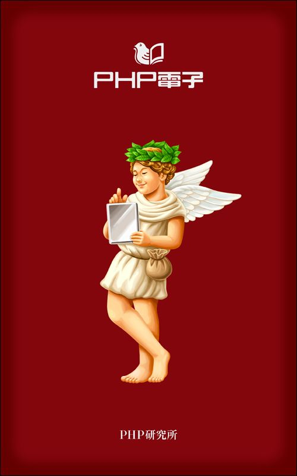
［新訳］読書について
知力と精神力を高める本の読み方
ショウペンハウエル・著
渡部昇一・編訳
まえがき
「デカンショ」という歌がある。
デカンショ、デカンショで半年暮らす
後の半年は寝て暮らす
元来は丹 波 篠 山 （兵庫県） あたりの民謡で、「デカンショ」とは単なる掛け声だったらしい。しかし、戦前、「デカンショ」は「デカルト、カント、ショウペンハウエル」の略であると称された。この三人が哲学者の巨頭という意味合いが、そこにはある。言い換えれば、ショウペンハウエルはデカルトやカントと並ぶぐらい、当時の哲学青年に人気があったということにもなる。
しかし、ヨーロッパ人ならば、デカルト、カントとショウペンハウエルを並立させないと思われる。デカルトは宇宙を哲学の対象とした先駆者であり、ニュートンまでまっすぐ連なる。カントは認識論の集大成のようなところがある。哲学史において、この二人と比べたら、ショウペンハウエルのランクは少し落ちる。日本で「デカンショ」として並んだのは、日本人とショウペンハウエルの相性がよかったからだろう。
このことに関しては後述するが、ショウペンハウエルが非常に人気があった理由として、「悲観の哲学」だったことが挙げられる。それが、当時の青年たちが抱いた悲観的な感覚をよく捉えていたというのである。たとえば藤村操 という第一高等学校に学ぶ十八歳の哲学青年は、明治三十六年五月、日光・華 厳 の滝に身を投げた。その遺書は、当時の学生によく読まれ、暗記している者も少なくなかったという。その遺書は次のようなものである。
「悠々たる哉 天 壤 、遼々たる哉 古 今 、五尺の小 軀 を以て此 大 をはからむとす。ホレーショの哲學竟 に何等のオーソリチィーを價 するものぞ。萬 有 の眞相は唯だ一言にして悉 す、曰 く『不可解』。我この恨を懐いて煩悶、終 に死を決するに至る。既 に巌 頭 に立つに及んで、胸 中 何 等 の不安あるなし。始めて知る、大なる悲觀は大なる樂觀に一致するを。」
この遺書の背景に、宇宙の本質を「盲目的意志」と唱えたショウペンハウエルの影響があったと見てもよいであろう。
戦前の哲学青年たちが読んだショウペンハウエルの主著は、姉崎嘲風（正治） が翻訳した『意思と現識としての世界』（現在は『意思と表象としての世界』と表記される） だ。なお、姉崎はイギリス、フランス、インドに留学して宗教学を学び、高山樗 牛 らと『帝国文学』を始めた学者である。
さて、本書では、ショウペンハウエルの『読書について』を取り上げてみたい。
「読書とは、自分で考える代わりに他のだれかにものを考えてもらうこと」として知られる彼の考えは、本のみならず、新聞、雑誌、ネット、テレビ......、情報が氾濫している現代にこそ、参考にすべき点がある。
良書と悪書、読むべき本、そして悪書の役割。それは年齢によっても違ってくるが、ショウペンハウエルの真意と、私のこれまでの読書体験から分析してみた。
読者諸氏の今後の読書法に役立つことができれば、幸甚の極みである。
二〇一二年七月
渡部昇一
［新訳］読書について 目 次
装丁 一瀬錠二（Art of NOISE）
編集協力 菅原昭悦
志田 慎
制作協力 株式会社ＰＨＰエディターズ・グループ
第１部 ショウペンハウエルの生涯と哲学
◎悲観の哲学
まず、ショウペンハウエルとはどういう人物だったのか。これは彼の哲学を知る上で重要な前提となるので、見ておきたい。
ショウペンハウエルの祖父も祖母も、オランダで生まれた。祖父の祖父にあたる人はオランダの牧師だったようだ。ショウペンハウエルという名前は、彼自身がいっているように、ドイツに同じ名前の人がいない。これはオランダ系の名前だと思われる。
自分がオランダと関係が深いことを、ショウペンハウエルは喜んでいた。オランダは他の国に比べて自由だったので、デカルトやスピノザといった偉い哲学者が活躍した。哲学者として誇りに感じても不思議ではない。
しかも、当時はドイツというまとまった国がなく、プロイセン王国やザクセン王国、それにハンブルクなどの自由都市が割 拠 するという状態だった。だから、ドイツに対してあまり関心がなくても、これまた不思議ではない。ショウペンハウエルに限らず、ニーチェにしても先祖がポーランド人であることを誇りに思っていた。この辺が、今とは感覚が違うところである。
ショウペンハウエルの祖父はダンツィヒ（現在はポーランドに属する。グダニスク） という自由都市に移り、手広く商売を始めた。それをショウペンハウエルの父が継ぐわけだが、父もまたオランダ語ができ、イギリス、フランスなどと国際的な取引をやっていただけに、非常に啓蒙的な人だった。
息子に「Arthur」（アルトゥル。英語では「アーサー」と読む） という名前をつけたのは、ドイツ語、英語、フランス語で綴りが変わらない名前が「Arthur」ぐらいしかないからだといわれる。つまり、イギリス人、フランス人などと付き合うことを念頭に置いて、我が子の名前を選んだわけである。
◎幅広い芸術を吸収した若き日々
一七九三年に、プロイセンのフリードリッヒ大王がダンツィヒを支配下に組み込んだ。このとき、大王がプロイセンの市民権を与えようとするのを断り、ショウペンハウエルの父はまだ自由都市だったハンブルクに移った。「一人の領主の下に属するのは嫌だ」という感覚が、北ヨーロッパの自由都市の商人にあったからだろう。
国際的に活動する父は、しょっちゅうヨーロッパ内を移動した。ショウペンハウエルが生まれた一七八八年はロンドンにいて、身ごもった母がダンツィヒへ帰って出産している。ベルリンの教授になる際、提出した履歴書のなかで「もう少しでイギリス人になるところだった」とショウペンハウエルは書いているが、そういう国際的な感覚が普通に流れている家で彼は育った。
父は息子を国際的な人間にしようと考えたのだろう。ショウペンハウエルが九歳のときに、フランスのル・アーヴルにいる取引先に頼んで預かってもらった。そこでショウペンハウエルは二年間、フランス人として育つ。その後も方々を回り、十二歳の頃にはワイマールで哲学者のシラーと会っている。
十五歳になった頃、ショウペンハウエルは学問に目覚め、高等学校（ギムナジウム） に入りたいと求めた。彼を商人にしたい父は、学校に入るよりも世界を知るべきであるといい、学校に進む代わりにヨーロッパの大旅行へ連れ出した。
一行はまずオランダに行き、次にロンドンへ渡った。ロンドンでは大英博物館を見たり、ロンドンシアターでシェークスピアの劇を観た。「ハムレット」も観たし、「真夏の夜の夢」も観ている。特に「真夏の夜の夢」には感銘するところがあったようだ。劇中に「この世の中は夢が作られているのと同じ材料で作られている」という台詞が出てくるが、ショウペンハウエルは後に「この世は夢と同じ材料で作られている」という文章を記している。シェークスピアの有名な言葉を記憶に留めていること自体、後年に彼が形づくる哲学の一端を暗示しているようにも思える。
それから、イギリスでは天文学者のハーシェルをウィンザーに訪ねて望遠鏡を見せてもらったり、国王のジョージ三世に会ったりしている。
ジョージ三世は非常に美男であるのに対して、皇后のシャーロット・メクレンブルク（メクレンブルクから嫁に行った人） は非常に醜女だと書いている。余談になるが、ジョージ三世は当初、レディ・セーラ・レノックスという名の美女と結婚しようとしていた。彼女は、フォックスというイギリスの大臣の姪だった。イギリスでは、王様が家来の娘と結婚するのは困るという空気がある。日本でも江戸時代の大名は他の大名から婿を取ったり嫁を取ったりして、基本的には家来からはもらわない。それと同じセンスである。結局、レディ・セーラ・レノックスをあきらめ、ドイツの貴族メクレンブルク家の女性を嫁にもらったわけである。
イギリスの次にパリを訪れた。パリでは有名なタルマンの芝居を観たし、ルーブル美術館に行って有名な彫刻であるラオコーンやビーナス、ラファエロやレオナルド・ダ・ヴィンチの絵を観て、感銘を受けている。この美術体験もまた、ショウペンハウエルの哲学に関係してくる。
パリから南フランスを回り、ガレー人の奴隷の監獄を見たが、ショウペンハウエルはウィンザーで死刑囚三人が死刑になるのを見たり、けっこう変なものも見ている。南フランスから北上してリヨンに行き、そこから東に向かってジュネーブに入る。モンブランを眺めたりしてスイスを横断すると、南ドイツからドレスデンを経てハンブルクに戻った。
◎父親の自殺と強い母親
普通では考えられないくらい贅沢な旅行をして見聞を広めたショウペンハウエルを、予期せぬ出来事が襲う。家に帰って間もなく父が自殺したのである。ショウペンハウエルは十七歳と、多感な時期だ。これが彼に「暗さ」をもたらす一因になったのかもしれない。なお、これも余談だが、父が自殺したことに触れた日本の解説書を私は読んだことがない。
自殺した直接の原因は、うつ病の発症といわれる。なぜ、うつになったのか。商売と関係があることは確かだが、商売が本当にうまく行かなくなったのか、うまく行かなくなるという妄想にとらわれたのかはよくわからない。というのは、生活が立ちゆかなくなるほど、商売が駄目になっていたわけではないからだ。父は妻と二人の子に遺産を残した。その遺産のおかげで、ショウペンハウエルは最後まで金の苦労をしていない。生計を立てるために学校で教える必要もないし、無理に売れる本を書く必要もなく、好きな研究を続けられたのである。
父と母の歳がかなり離れていて（母のほうが若い） 、母は後に作家にもなるような女性だったから、実業家のおじさんとはうまくいかなかった、ということも考えられる。案外、夫婦関係の不和がうつに関係したのではないかとも思う。
ショウペンハウエルの母はダンツィヒ生まれである。実家はダンツィヒ市のセネター（参事員） だから、身分の高い家の出だった。ショウペンハウエルは母のことをほとんど語らず、女性については厳しい論を書いていることから、彼の女性観は母親と関係があるのではないかともいわれている。
女性に関して見ると、父方の祖母は精神を病んでいる。それから、ショウペンハウエルには妹が一人いる。彼女は醜女で有名である。結婚せず、作家として成功した。妹のほうがショウペンハウエルよりもずっと本が売れたと思われる。
ショウペンハウエルの父が自殺した後、彼の母はハンブルクの店をたたんでワイマールに移り、サロンを開いた。彼女は非常に強い性格で、本当のメリー・ウィドウ（愉快な未亡人） だった。社交性と文学的才能があり、女性向けの小説や旅行体験記など、いろいろなものを書いたが、本はけっこう売れて有名になった。
彼女のサロンにはゲーテも出入りしたので、ショウペンハウエルはゲーテに会っている。色彩論についてゲーテと議論したが、意見が合わず、ゲーテには気に入られなかったようだ。
◎カントとショウペンハウエル
ショウペンハウエルは結局、ギムナジウムの卒業試験を通り、二十一歳でゲッチンゲン大学に入学、カントやプラトンを勉強した。それからベルリンに移る。この頃はフィヒテを尊敬していたけれども、後で評価しなくなる。イエナ大学で学位を取ったが、それはカント主義に独自の見解を加えた「充足理由律の四つの根源について」という題名の論文によってである。
認識論では「カテゴリー」という概念を扱う。カントは認識の形式を「直観による感性」と「悟性によるもの」があるとして、悟性のほうにカテゴリーがあるとした。ショウペンハウエルはカントのように分けず、カントの哲学でいちばん重要な、空間と時間と因果律を中心として人間の表象ができる、という考えをする。このあたりはショウペンハウエルの哲学を理解する上で重要なので、よけいなことでも触れておきたい。
カントの哲学の中心は「Ding an sich」（物自体） である。人間が認識する場合、目に見えるものは網膜から神経を通って脳でわかる。しかし、見えるようにそこに物があるかどうか、本当は保証できない。音も同じことで、耳から神経を通って脳でわかるから、その通りの音があるかどうかはわからない。しかし、「物自体」はあり、その「物自体」が時間と空間という二つの枠組みの中で人間に現れる。その現れ方の中にカテゴリーがある。これがカントの基調的な考え方である。
わかりにくいかもしれないが、「物自体」はある。あるけれども、人間にわかるのは時間、空間とカテゴリーによって「物自体」に相当するものがわかる、というわけだ。
本当にある物を、カントは「物自体」と呼んだが、ショウペンハウエルはそれを「生に対する盲目的意思」であるとした。これが一つのポイントである。
つまり、カントのキーワードである「物自体」にかわるものとして、ショウペンハウエルは「生に対する盲目的意思」を提示したのである。
「生に対する盲目的意思」が時間と空間を通じ、われわれに認識される。われわれが認識する対象として現れたものは、「生に対する盲目的意思」の現れである。その現れ方は、全部表象である。これはカントの「物自体」と同様に、「生に対する盲目的意思」自体はわからないから、現れてくるのは表象でしかないという考え方だ。しかし、すべての現象のもとには「生に対する盲目的意思」があるとしている。こういう哲学である。
ところで、これがどうして「悲観の哲学」につながるのか。
人間もまたいちばん根底にあるのは「生に対する盲目的意思」であり、人間は「生に対する盲目的意思」に動かされている。「生に対する盲目的意思」とは、常に満足することなき意思である。それが現れ出る場合は、終わることなき苦悩となる。これは人生苦の基である。
つまり、人生の基がそもそも苦であり、その苦には終わりがないのだから、常に人間は苦を感ずるというわけだ。これが彼の哲学は基本的にペシミズムだといわれる理由である。確かに、苦悩する青年にとって、実感としてうなずけるようなところがある。
◎仏教に影響を受ける
ショウペンハウエルは、フリードリッヒ・マイヤーというインド学者から『ウパニシャッド』を習った。テキストとしたのは、ペルシャ語版からのラテン語訳だったという。
『ウパニシャッド』には仏教的な思想が流れている。したがって、ショウペンハウエルの哲学には仏教的なところがある。日本の哲学的伝統は基本的に仏教だから、それと相響き合うことがあって、戦前の日本で人気があったのではないかと思う。
この仏教的色彩が濃く出ているのが永遠の苦悩から逃れる方法である。どうするかというと、「快楽を追求することが空しいことだと悟る」といった、仏教でいえば解 脱 のようなことをショウペンハウエルは説く。
解脱のようなことに至る道は二つある。一つは恒久的な離脱だ。これは恒常的な否定の精神であり、哲学的な離脱方法である。
恒常的に離脱するにはどうするか。「生に対する盲目的意思」に従って、自分の意思を捨ててしまえばいい。具体的な形としては、種の保存を断念するために、童貞であること、結婚しないこと。それから、個人の個体を保存することにあまり心を使わないで、粗食すること。利己心は空しいものだから、これを捨てて清貧に生きること。哲学的な禁欲的修行として、三目を挙げた。いわば聖者の哲学のようなことをいったわけだ。
もう一つ別に、習慣的な離脱方法ということをショウペンハウエルは考えた。それは芸術に触れることだ。芸術に触れたときだけは、「生に対する盲目的意思」のくびきから離れたような感じになる。プラトン的なイデアを見るような感じになるともいう。芸術的な直観はあらゆる制約から脱して──因果律からも脱して──事物を直観的に感ずる。ただし、これは一時的なものであるとショウペンハウエルはいっている。
芸術体験に重きを置く。このことが後世の学者に影響を及ぼした。芸術体験とはどういうことかというと、黙想と沈潜体験である。これが芸術が与えてくれるものであり、そのときは「生に対する盲目的意思」から離れたような感じになる。そして、芸術的に得たビジョンを、人間の認識形式の最高の形式──プラトンのイデアの概念に相当するもの──と考えた。
芸術の中でも、ショウペンハウエルは特に音楽を重要視した。音楽は観る必要もなく、イデアすらも必要としない。つまり、理性を必要とせず、翻訳のできないかたちで味わうことができるからである。
一方、義務には根拠がないと否定する。これはカントに対する完全な批判である。重要なのは義務ではなくて同情であると、ショウペンハウエルはジャン・ジャック・ルソーと同じようなことをいっている。
以上がショウペンハウエルの哲学の概略である。
◎ヘーゲルとの確執と晩年の評価
一八二〇年、ショウペンハウエルは三十歳の頃に、ベルリン大学で教授の資格を得た。そのときの就任演説に書いてあるのだが、彼はヘーゲルと対立する立場に立った。
ショウペンハウエルの哲学は認識論であり、カントを重んじる。フィヒテとヘーゲルは観念論である。「物自体」（ Ding an sich） を認めず、人間の認識はすべて頭の中で作っているという考え方だ。
拠 って立つ考え方に違いがあるから、ショウペンハウエルがヘーゲルに批判的だとしてもおかしくないが、当時、フィヒテ、ヘーゲルはベルリン及びあのあたりの学界を圧倒する存在であり、ヘーゲルはベルリン大学で支配的な哲学だった。ヘーゲルのほうが格段に巨大であり、ショウペンハウエルはライバルともいえない。そのヘーゲルと対立してかなうはずはない。
結局、一八二〇年に大学の教授になったけれども、翌年の講義はなかった。彼は落ち込んでイタリア旅行に行ったり、病気になったり、右の耳が聞こえなくなったりして、講義をやめてしまう。四、五年経ってから、再びベルリン大学に呼ばれようと努力したけれども、成功しなかった。
この間、個人生活においては、歌手のカロライン・リヒターと関係をもとうとして、うまくいかなかった。また、自分が住んだ家のことなのか、自分が貸した家のことなのかはわからないが、家賃の問題では訴えられたりしている。
一八三一年にベルリンでコレラが発生すると、四十三歳のショウペンハウエルはフランクフルトに移る。彼は父の遺産をもらっているので、大学を辞め、フランクフルトで暮らしても生活には困らない。こうして、言いたい放題いう在野学者──ドイツ語では「ブリバートゲレールター」──となった。
妹の本や母の本は売れるのに、博士論文に手を入れて出版したショウペンハウエルの『意思と表象としての世界』はさっぱり売れなかった。ところが、大学での講義をあきらめて三十年後、ベルリンを去って二十年後の一八五一年、もとの大論文『意思と表象としての世界』に補足する「附録（パレルガ） と補遺（パラリーポペナ） 」として出版したもののなかで、『人生知のためのアフォリズム』という格言集が売れた。ショウペンハウエルが六十三歳のときである。これが引き金になって彼の著書が売れ始め、主著である『意思と表象としての世界』も読まれ出した。
そのうちに十九世紀の前半に支配的だったヘーゲルを頂点とするドイツ観念論が、歴史的に崩れ始める。一八四八年に起こったドイツ革命が失敗して革命思想が失速すると、これとともにヘーゲルの哲学体系も失敗ということになってしまったのだ。
ヘーゲル哲学が流 行 らなくなったときにはじめて、ショウペンハウエルの理論に光が当たる。一つには種族維持、個体維持などで生物学的にも関係するような感じがすること、それから欲望の禁止という東洋的なところがあることなどがその理由だが、ショウペンハウエルの理論は世界で人気が出た。そして、悲観的な傾向の哲学が流行し、日本にもそれがおよんだ。
ショウペンハウエルは大変に学があるから、読んでみれば価値があることはわかる。彼はかつてゲッチンゲン大学では医学部に入り、自然科学の基礎知識を持ち、アリストテレス以来、彼ほど自然科学の知識を有し、自分の形而上学にそれを取り込んだ哲学者はそれまでいなかったといわれる。その哲学は一時期な流行で終わらず、一八六〇年に七十二歳で死ぬまで、その名声が崩れることはなかった。
なお、ショウペンハウエルはかなり長寿だった。当時の年齢を今日と比較するには、歳を七で割って十を掛けるといいといわれるが、それに従うと、七十二歳は百歳ぐらいになる。カントも長生きで、八十歳まで生きた。いまなら百十歳以上に相当するだろう。
最後は評価されて、それなりに人気がある哲学者として亡くなったのは幸いだっただろう。ただ、それを楽しむ気持ちがショウペンハウエルにあったかどうかはわからない。
◎ニーチェに与えた影響
カント、ヘーゲル、ショウペンハウエルという流れは、ドイツの運命とも関係があるといえるかもしれない。プロイセンを隆盛に導いたフリードリッヒ大王の時代はカント哲学が主流だった。フリードリッヒ大王は自軍の将校たちにカントの講義に出るよう薦めたほど好きだったらしい。カントもまた、フリードリッヒ大王を啓蒙の君主として非常に重んじた。
そして、プロイセンが栄えに栄える時期になると、今度はヘーゲルの世界精神が合っていた。しかし、フランス革命の影響もあり、ドイツで革命が起きたりしてプロイセンの体制がやや崩れた。帝国として発展する力強さが薄れると、ヘーゲル哲学が流行らなくなる。こうして世の中の雰囲気が変わり、ペシミスティックなショウペンハウエルの哲学が受け入れられる土壌ができたのである。
ショウペンハウエルの哲学は、いろいろな人に影響を与えた。いちばん影響を受けたのはニーチェだろう。ニーチェが哲学に目覚めたのはショウペンハウエルによってだったし、ショウペンハウエルは「生に対する盲目的意思」といったが、ニーチェは後になると、それをもじったような言い方で、「Wille zur Macht」（権力への意思） と言い出している。
ニーチェがショウペンハウエルに惹 かれたのは生まれや生き方が似通っていることもあるだろう。ショウペンハウエルもニーチェも、かなり孤独だった。愛しもせず愛されもせず、友人関係もあまりない。それから、方々を歩き回った人生という共通性も影響したかもしれない。
フランスではベルクソンの「生命の飛躍」（エラン・ヴィタール elan vital） に、ショウペンハウエルの影響がある。それから、ジークムント・フロイト。フロイトは無意識や潜在意識に目を向けたが、これはショウペンハウエルの「生に対する盲目的意思」の存在と関係がある。
ユングもそうだ。「潜在意識の世界で他の人とも繋がる」というユングの前提も、基本的にはショウペンハウエルの「『生に対する盲目的意思』は一つしかなく、それが個々のかたちとして現れるのが表象」という考え方の延長上にある。
それから、私はマーフィーなどの潜在意識の紹介をしたことがあるが、マーフィーにも「『生に対する盲目的意思』は一つ」とするショウペンハウエルの哲学を感じる。ただ、マーフィーたちは、悲観的ではない。自分が一生懸命やれば、自分の意識しないところで力が働いて、願望が実現される──と、都合のいいことをいうところはショウペンハウエルと違う。
いずれにせよ、直接に認識できないもの（ショウペンハウエルのいう「生に対する盲目的意思」） で人が繋がっているという発想は、おそらく西洋では初めてのものだろう。
また、芸術尊重の哲学は当然ながら芸術家に影響を与えた。マルセル・プルースト、トーマス・マン、新しくはサミュエル・ベケットなどに強く影響したといわれる。
ショウペンハウエルの著作には、彼の人生や人間性が反映されたところがある。当時は厭世観の時代だったから、彼自身が厭世の実感を持っただろうが、私が思うに、一緒にヨーロッパを旅行した父が自殺したことは、彼の人格形成に大きな影響を及ぼしたに違いない。男の子にとって、父親の死は重大な事件なのだ。その上、母親とは相性がよくなかった。そういう人間が、どう世の中を見るか。これがショウペンハウエルの哲学を読む前提である。
なお、『読書について』を書いたのはショウペンハウエルの本が売れ始める前で、二巻本のなかの一部を取ったものだ。これは断片を書いたものであり、主著ではない。
第２部 ［新訳］読書について
無知は富と結びつくことによってはじめて人間を堕落させる。
貧しい人は貧困と辛苦によって躾 けられる。
貧困と辛苦が貧しい者から自由を奪い、知識よりも稼ぎが重要になるのは当たり前の話である。生きるためには、とにもかくにも稼がなければいけないのだから。
無知が富と結びつくと、それは人間の品性を卑 しめ、無知な金持ちは家畜の暮らしと同じだというのもまた、当たり前の話である。家畜の特徴は生活に困らない。その意味でも金持ちは家畜だし、金持ちがいくら贅沢しても頭は使わないという点でも家畜である。
ここは「太った豚か、痩せたソクラテスか」と似たようなイメージが、ショウペンハウエルにあったことを物語っている。
読書とは、自分で考える代わりに他のだれかにものを考えてもらうことである。
読書とは私たちの代わりに誰かが考えてくれることであり、その人の心の動きを反復しているだけだ、という指摘は真実である。
これを徹底的にやったのが、東京大学哲学科の主任教授だった伊藤吉之助という人だ。
伊藤は私の中学の先輩にあたるが、いちばん優秀な学生というわけで東大に残された。岩波書店の『哲学小事典』をほとんど一人で編集したから、優秀ではあっただろう。しかし、彼の同級生、あるいは前後にいた人たち──なかには『三太郎の日記』の阿部次郎もいた──はみんな博士論文とか、他の書物を書いているが、伊藤には博士論文がない。
教壇に立っても、教えるのは自分の意見ではなく、ドイツ語のテキストを読むだけだった。ある人が、「それではつまらないだろう」といったところ、それこそ「しめた」といわんばかりに彼が説いたのは、「われわれは偉大な哲学者の言葉をていねいに追う。これが第一歩だ」ということだった。
戦争中、文系の学生が学徒出陣するなかで、各学科に一人ぐらいが学問を継ぐ人間として残されたが、東大の哲学科から選ばれ、後に東大で美学の教授になった今道友信という人がいる。彼も私の中学の先輩だった。
この人が伊藤吉之助の指導を受けたとき、暗いところで小さい活字の本を読んだものだから、読み違えた。教えるほうも教えられるほうも鶴岡（山形県） の中学にいたことがあったので、伊藤が「どうしてこんなようなことがわからねえんだよ」と方言で怒った。後に美学の教授となった人はさめざめと泣き出した。伊藤はあわてて、「君、そんなことでないよ」と慰めたらしい。
伊藤吉之助は、徹底的にテキストを読めといって、特に教えることはしなかった。そして、本を読むことにほとんどすべての精力を使った。いわんとするところは、「わずかなニュアンスでも徹底的に読み込め。それで頭を作れ」ということなのだろう。確かに、そうして知識を養い、それを基にして考える人はいる。しかし、伊藤吉之助は自分では考えなかった。自分の哲学、自分の思想を残すことはなかった。読むことによって考えることが奪われた人といえるのではないか。
自分で考えないことは楽だし、論文を書かなければ、まったく批判を受けない。伊藤吉之助は日本の哲学界では大きな権威のあった哲学者の一人だが、結局、先人の哲学の伝達者という役割だけになってしまったと思う。
ちなみに、伊藤吉之助にはたった一冊、敗戦前年に自分で書いた著書がある。戦争中に出した『最近の独逸哲学』という本だ。「これは書かなかったほうがよかったのではないか」と、伊藤に怒られさめざめと泣いた今道友信氏がいっている。
読書とは他人に考えてもらうことだというショウペンハウエルの指摘は鋭い。読むことばかりに慣れていると、極端な場合は自分で考える力をまったく失ってしまうのだ。
大量に、またほとんど一日じゅう読書する人は、自分で考える能力をしだいに失ってゆく。
わたしたちが自分の思考への従事から離れて読書に移るとき、安堵感を得られるのはそのためである。
読書中のわたしたちの頭の中は他人の思考の遊び場であるに過ぎない。
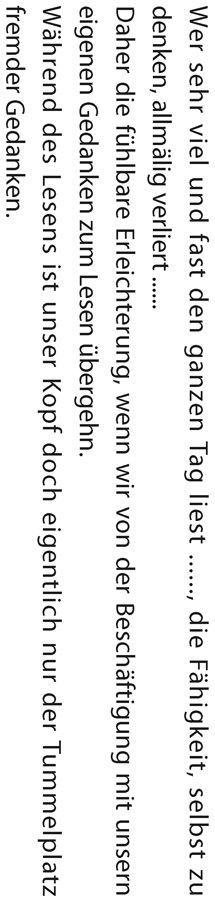
本を読んでいるとき、考えるという作業の大部分が免除される、というのは確かにそうだと思う。そして、本を読むときは考えるという作業の大部分が免除されるから「わたしたちが自分の思考への従事から離れて読書に移るとき、安堵感を得られるのはそのためである」というのは、ショウペンハウエル自身の体験を語っているのだろう。
この場合の仕事は書くことだと思うが、私もそれは実感としてある。つまらない原稿でも書こうとすれば、自分で考えながら書かなければならない。それは相当、気が重い作業である。
それだけに、一般の教養人や学生には論文を書けない人がおおぜいいるし、大学教授にもいる。ただし、ドイツの大学教授に論文を書けない人はあまりいない。そこがドイツの特徴だ。
ドイツでは教師になるためには必ず博士論文と教授資格論文を書く必要がある。つまり、少なくとも二点、論文を書いていないと先生になれないのだ。どちらも相当重要なものだから、その二点を書いたら、書けない人がいなくなる。その辺はイギリスと違うし、戦前の日本とも違う。逆にアメリカの大学や今の日本の大学はむやみに書いた物の数を重視する。論文の「数」が重視されすぎて「質」に問題が出てくる場合が少なくない。
とはいえ、ドイツの大学教授でも二点だけ書いて、その後は書かなかった人もいるだろう。その数は少ないはずだが、それだけにショウペンハウエルには、読むだけの先生が目についたのかもしれない。
また、「読書中のわたしたちの頭の中は他人の思考の遊び場であるに過ぎない」とは、読書はいい休養になるかもしれないが、自分で考える力がだんだん失われてしまうということだ。
これは朝鮮の儒教を考えればいい。李 退 渓 という人が出たら、それ以後、優れた学者が全然出ない。みんな李退渓の勉強だけで終わってしまう。シナの儒教にもそういうところがあるが、極端にそうなったのが朝鮮の儒教だ。
日本も、初めのうちは同様だったと思われる。しかし、次第にいろいろな学派が出てきた。一生懸命に読むだけで終わらず、自分で考えたから、新しい優れた儒学者があらわれている。本を読み込んでも、本に読み込まれなかったわけだ。
日本がシナや朝鮮と同じ道をたどらなかったのは、神道や仏教という別の系統が死なないで残っていたからかもしれない。そういうものがあると、どこか違ってくる。
たとえば、垂 加 神 道 を始めた山 崎 闇 斎 は大変な儒者でもあった。あるとき、儒学の弟子たちを集めて「孔子が総大将で、孟子が副大将で攻めてきたらどうするか」と尋ねた。弟子たちは「孔子様」「孟子様」と崇 めているから、答えようがなく、みんな頭を下げてしまった。山崎闇斎は「そういうときは孔子を取り殺し、孟子の首を刎ねろ」といった。そういう発想が出てくるところに、日本のいい面がある。
それにしても、考えない環境は怖いものだと思う。西洋哲学が一気に出てきた感じがするのは、聖書の解釈が自由になってからだった。一方、イスラムは偉大だけれど、いろいろなことをいってはいけないから、一生懸命コーランを読むだけで終わってしまう。
『論語』を引き合いに出せば、ここは「学びて思わざれば則 ち罔 し 思いて学ばざれば則ち殆 し」の「学びて思わざれば則ち罔し」に相当する箇所である。なお、孔子は寝てばかりいるよりは博打 でもやったほうがいいと、弟子を注意した。寝ていたら頭を使わないが、博打は自分の頭で考えるからよほどましだ、というわけである。
たくさん読書すればするほど、それだけ読んだ内容が精神に跡をとどめることが少なくなる。
実に多くの学者がこの例に当てはまる。彼らは読書して馬鹿になってしまったのである。
「実に多くの学者がこの例に当てはまる。彼らは読書して馬鹿になってしまったのである」という文章は、ドイツ語で「Solches aber ist der Fall sehr vieler Gelehrten: sie haben sich dumm gelesen.」となっている。「sie haben sich dumm gelesen」が「読んで馬鹿になった」という箇所だが、「本を読んで馬鹿になる」（ドイツ語で「 sich dumm lesen」） という言い方があるのはおもしろい。
また、こうもいっている。「ひまさえあればすぐに本を手に取って読むという生活は、つねに手先を使って仕事をしているよりよっぽど精神をマヒさせてしまう。手仕事をしているときは、あれこれと思いに耽 ることができるからである」と。それを同じことを『知的生活』の著者ハマトンがいっている。
ハマトンは絵が好きで、画家になろうとしたこともあった。彼が画家と話してみると、実に内容がおもしろい。その理由を「画家が絵を描いている間、いろいろなことを考えるからだ」と彼は書いている。ハマトンの時代は、画家はだいたい学問のない人々で、職人というクラスだったから、普通は見下されていたけれども、非常にインテレクチュアルだとハマトンはいうのである。
ショウペンハウエルやハマトンの指摘と少し違うが、大学院を経て学究の道に進む人がアルバイトをするなら、身体を使う労働のほうがいいと私は考えている。大学の非常勤講師ぐらいだと給料が安いので、家庭教師や塾の講師などのアルバイトをする人がいる。しかし、そういう学問に関係のある仕事をするより肉体労働をしたほうが勉強したくなると思う。
これには私自身の体験が関係している。中学二年の頃、私は勉強するのが嫌になっていた。中学三年になると、敗戦まで一時間も授業がなく、肉体労働ばかりだった。そうして一年近く肉体労働ばかりさせられたら、勉強したいと思うようになったのだ。
この体験から考えるに、本当に何かを研究するために資金が欲しい場合、理想をいえば、賃金の高い肉体労働が最適だと思う。たとえ賃金が高くなくても、スーパーのレジで働くといった頭を使わないアルバイトのほうが、兼任講師をしたり、塾や予備校で教えたりするよりはいいのではないか。
大学の先生がスーパーのレジ係をやったらおかしくて、兼任講師で教えるほうがおかしくないという見方もある。しかし、研究する者が頭を使うようなアルバイトをやると、自分のやるべき勉強ができなくなる恐れがある。たとえば、小遣い稼ぎに塾や予備校で教える。すると、頭を使っているような気になってしまいがちだ。その結果、研究のほうに使う分のエネルギーがなくなったら本末転倒である。
なお、頭を使うという点では、テレビゲームにはまり込むのは危ない。テレビゲームは大脳を使わないという研究があったが、一生懸命、頭を使っているように感じたとしても、絶対に頭は成長しないと思う。考えるということがなく、条件反射みたいなことをやっているだけだからである。条件反射も、生きるための条件反射ならいいが、ただ遊ぶための条件反射だ。これは成長性がない頭の使い方である。
反 芻 することによってのみ、人は読んだものを身につけることができる。
「反芻することによってのみ、人は読んだものを身につけることができる」といって、反復して読むことの重要性をショウペンハウエルは教えているが、これには少し異論がある。
反復して読みたくなったら反復すればいい。しばらく経って「ああ、あの本を読みたいな」と思ったら、もう一度読む。しかし、すべての本を反復するのは無駄であり、馬鹿げた話だ。
しかし、ショウペンハウエルが「反復して読め」といったから、何でもかんでも読み返すような人がいる。いちばん危ないのは、ただ忙しくしていたい人だ。やたらと無駄なことをやって満足する。
ただし、無駄なことを排除し、効率的にやればいいかというと、読書はそういうものではないと思う。
読書には、「すぐに役立つ情報を得るための本」を読む場合と、「役に立つか、役に立たないかわからないで読む本」を読む場合の二種類がある。もっとも、最近はすぐに役立つ情報を得たいなら、読書よりインターネットで探すほうが早い。そうなると、いつ役立つかわからない──ひょっとすると、永久に役に立たない──のが読書ということになる。それでも読書の意味はある。それを比喩で述べたい。
以前、佐 々 淳 行 氏からグレープフルーツを送ってもらったことがある。実に見事なグレープフルーツで、おいしい。あまりにもおいしいので、なぜ、おいしいかをいろいろと考えた。
グレープフルーツはクエン酸と糖分と水分からできている。ならば、砂糖とクエン酸をなめて水を飲めばおいしいか。そうではない。グレープフルーツというのは、皮をむいた匂いとか袋を破ったときの感じだとか、そういうものが全部合わさってこそ、おいしい。
では、栄養という面で考えたらどうなるか。砂糖、クエン酸といった栄養を早く簡単に取るなら、全部サプリメントでいいのである。しかし、子どもに必要な栄養をサプリメントで与えたら身体が育つだろうか。
極端なことをいえば、点滴だけで栄養は補給できる。そうしたら子どもはどうなるか。胃は発達しない。歯もできない。腸になると、まったく駄目だろう。役立つかどうかわからない本は読まないというのは、点滴で栄養を取るということに通じる。
消化器ができるためには何が必要か。食べ物を食べることだ。食べ物を食べたときの特徴は、大便が出ることだ。食べ物を食べると、胃が働き、腸が働き、そして大便を作る。このことによって消化器が発達し、ひいては身体ができる。
本というのは、そういうものではないかと思う。吸収されずに排泄されてしまう部分が非常に多い。食物で吸収しないものは何かといったら、繊維質がそうだ。本でいえば、これは「わけのわからない本」にあたる。吸収しない繊維質が腸を作るように、わけのわからない本を読むことで考える力が育 まれる。
旧制高校生たちが、わけもわからないのに「デカンショ、デカンショ」で哲学書を読んだ。そんなことは無駄ではないかというけれど、あれはあれで意味がある。あまり消化のよくないものを食べて胃腸ができたように、旧制高校生は理解できない哲学書を読むことで考える力をつけた。旧制高校卒業者たちが、どこか風格を感じさせるのは、そこに一因があると思う。
人が育つときは、無駄と考えないでいろいろなものを食べるように、頭脳を作るためにはいろいろな本を読む必要がある。重要なインフォメーションだけ取っていたのでは、何が重要なインフォメーションかを考える力が養えない。何が重要なインフォメーションかを考えて選ぶ頭脳は、読書し、わからないところを考えたり、反芻することによってできるのではないだろうか。
多読、雑読をしていれば、そのうちにだんだんと本を選べるようになる。私ぐらい歳を取ると、馬鹿らしいと思う本が多くなるものだ。ショウペンハウエルがいう「読まなくていいものは読まないほうがいい」という境地は、たくさん読んで、はじめてたどりつけるのである。
たとえば、若い頃の夏目漱石はものすごく偉かった。しかし、八十二歳になった私に漱石の小説でいまも読めるものは『坊ちゃん』と『草枕』ぐらいだ。あるいは『こころ』も少しは読めるだろうか。漱石の弟子たちが高く評価したのは『道草』だが、要するに奥さんのお父さんに借金を頼まれて悩む話である。その悩みを漱石は非常にうまく書いているけれども、八十歳になると、悩むこと自体が馬鹿馬鹿しいと感じて、読むに堪 えない。
意外に変わらないのは、詩である。詩は散文と本質的に違う。たとえば、石川 木という幼稚な男が書いた散文を、いま誰が読んでいるだろうか。しかし、和歌はいまでも読むに堪える。漱石にしても漢詩と俳句はいい。これは不思議なものである。
歳を取ってみてわかったのは、歳を取ってから書いた人のものは、歳を取って読んでも青臭くないということだ。これは谷沢永一氏と一緒に体験したことだが、『論語』の対談で本を作ったときは、二人とも感心するばかりだった。ところが、同じく対談で『菜根譚』の本を作ったら、「これはちょっと青臭いな」とか「こんなこと、ないだろう」という箇所が出てきた。当時、谷沢氏も私も七十歳を超えていた。調べてみると、『菜根譚』は洪自誠が五十歳ぐらいのときに書かれたものだった。
もちろん、七十歳、八十歳になっても読むに堪える散文はある。それはたいしたものだ。
いずれにしても、若いときは無駄なプロセスを経ないといけない。つまらない本、無駄な本も読む。食事して全部消化・吸収し尽くし、クソも出ないなら人間ではない。九〇％ぐらい大便になっていいのである。こういう汚いような比喩が読書に向いているというパラドックスがある。
読んだ内容についてあとから再び思索することなく絶えず読書を続けると、根を下ろすことがなく、たいていは失われてしまう。
摂取したもののうち、ほとんど五十分の一も吸収されない。残りは蒸発や呼吸などによって排出されてしまう。
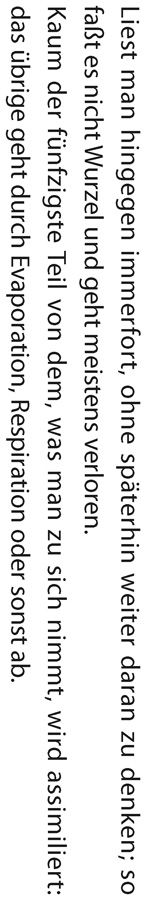
「読んだ内容について後から再び思索することなく絶えず読書を続けると、根を下ろすことがなく、たいていは失われてしまう」。これは先ほども出てきたように、「読んだら自分で考えろ」ということだ。そうしないと、自分の中に根付かない。この文では、そこまで行かない人を批判しているわけである。
続いて、「摂取したもののうち、ほとんど五十分の一も吸収されない。残りは蒸発や呼吸などによって排出されてしまう」というところは、蒸発や呼吸というより、先ほど述べた大便の比喩のほうがよくわかると思う。
おもしろいのは、偶然テレビを見ると、パラパラと出てきた情報が印象に残って、後で役に立つことがある。では、その番組を三十分見たらどうか。逆に何も残らなかったりする。ちょっとした情報が有用で、見続けると駄目だということは多い。
テレビは特にそういうところがあるが、本の場合でも同じだ。書店でふと手に取ってパラパラと立ち読みしたところがものすごく役立ち、買って帰って全部読んだら大したことがなかったりするのである。
紙の上に書かれた思考とは、けっして砂の上の足あと以上のものではない。
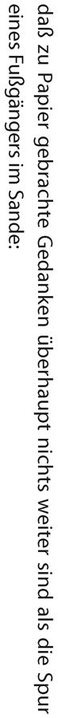
「紙の上に書かれた思考とは、けっして砂の上の足あと以上のものではない」。だから、本を読んでも自分で考えないと、何も生まれない。読んでも読んでも、知識が増えたという証拠がないままで一生が終わるだろう。
東大の英文学の先生で、ひどい人がいた。喋ることがなくて、一時間が過ぎてしまったりするのだ。
笑い話のような実話だが、東大での最終講義のとき、忠実な弟子たちが「先生、今日は最終講義ですから」と迎えに行き、教室に連れてきて教壇に据えた。
「シェークスピアとイプセンは」と、二人の名前を挙げたら、それっきりこの先生は黙ってしまった。しようがないから二、三十分後に弟子たちが教壇から降ろしたという。
この先生は普段の生活で反応がおかしくなかったから、認知症ではない。これはショウペンハウエルの「dumm gelesen」（読んで馬鹿になった） を思い起こさせる。彼の表記は複数なので、東大の先生をさす場合、「Er hat sich dumm gelesen」だ。ものすごい勉強家として評判だった。そして、東大英文科の教授になった。「学者馬鹿」とか、新渡戸稲造博士が嘲笑した「忘却先生」とかは、そういうものなのだろう。
作家の作品を読むことによって、その作家の特性まで身につけられるわけではない。
けれどもわたしたちが同様の特性を既に素質として、つまり可能性として所持している場合には、読書することによって内部のその特性を呼び起こし、意識へと上らせることができる。
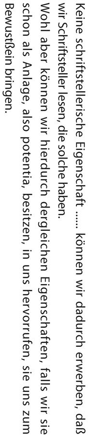
「けれどもわたしたちが同様の特性を既に素質として、つまり可能性として所持している場合には、読書することによって内部のその特性を呼び起こし、意識へと上らせることができる」という指摘は、そうだと思う。本を読んで、「自分はそちらのほうに向いていたのか」とか、「実は、そういう考えをしていたのか」と気づくことがある。そういう本に出合うことが、読書の一つの意味である。それによって自分の頭ができるわけだ。
もともと天分として本人に具 わっていることが前提条件となる。
それが、読書による人格形成によって作家になる唯一の方法である。
「人格形成によって作家になる、つまり読むことから書くことへと自分を高める唯一の方法は、天賦の才の活かし方を習得することだ」とあるが、これはむしろ逆で、天賦の才の活かし方を習得することは、読むことから書くことへ進むことではないだろうか。
書くための天賦の才能というものは、読むだけで出てくるわけがない。書くことによって出るはずだ。だから、「書く」という作業をやれば、天賦の才能を活かすことにつながると私は思う。
それから、「もともと天分として本人に具わっていることが前提条件となる」というのは確かである。生まれつきの才能がないと、読書から学べるものは浅はかな模倣者というより、ただ読んだだけになるだろう。
ここを読んで思い出したのは、新渡戸稲造の『修養』に登場する「忘却先生」というあだ名の人である。この人は朝から晩まで本を読んでいた。結局、何にもしないで死んだ。「何をやったのだろう」というようなことを新渡戸は書いているが、しょっちゅう本を読んでいて、何も覚えていない。これは才能がなかったのだろう。
大学には、本を読んでも論文を書けない学者がいる。本をよく読む人が大学の教授になったら論文を一枚も書いていない例を、谷沢永一氏は名前を挙げて語っていたが、本を読んで満足してしまうのだろうか。
あえていえば、書けないというのは、読んだものが頭の中でまとまらず、流れていくのだと思う。
保健当局は目の健康のため、定められた最小限のサイズよりも小さい活字が使用されないよう監視して欲しい。
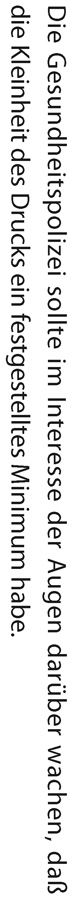
要するに「あまり小さな字の本を作ってもらっては困る」ということだが、昔は本当に小さい字の洋書があった。虫眼鏡を使って読んだのではないかと思われるようなものもある。日本の新聞にしても、昔の新聞は活字が小さかったし、文庫でも若い頃はぎっしり詰まっているので得したように感じたが、歳を取ると読みづらい。いまは大きな字の本が増えている。これはいい傾向だと思う。
ショウペンハウエルは耳が悪くなったけれど、目はどうだったかわからない。それでも、歳を取ると暗いところでは本が読みづらい。当時は、いまのように灯りが明るくないから、なおさら見にくかったはずだ。
図書館の書架には、過ぎ去ったいくつもの時代の誤った見解をあらわした書物が並べられ保管されている。
いまでは硬直して化石のような姿となって、せいぜい古生物学者のような文献学者に観察されるのみである。
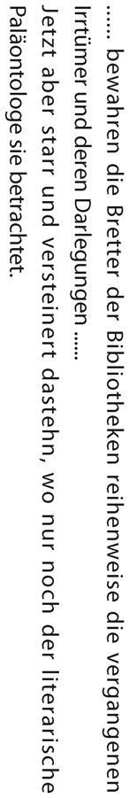
地層に埋もれた化石のように、図書館には過去の誤 謬 やら言説やらが時代順に保管されているというのは、その通りである。
その時代には元気いっぱいだったけれど、いまでは化石だ、とショウペンハウエルがいったとき、頭の中にあったのはヘーゲル哲学とその系統ではないだろうか。化石と呼ぶほど古くはないが、すっかり流行らなくなってしまった。
ショウペンハウエルのそういう個人的な見解を離れれば、硬直した化石のような本を発見する楽しみもある。化石が全部役に立たないかといえば、そうではない。埋もれているもののなかにはダイヤモンドもある。石油や石炭といった燃料もある。
たとえば、『古事記』は発掘されて価値のある本だった。本 居 宣 長 が『古事記伝』を出すまで、『古事記』は埋もれた化石のような状態にあった。誰もこの本を読めなかったからだ。読めないので、写す人がいない。だから、写本が少ない。このために偽書とする説まで出た。
本居宣長は『古事記』を読むために『万葉集』の和歌を全部暗記したといわれる。当時の言葉で感じられるようになるためである。そして、三十余年かけて読んだ。いまでも『古事記』は九七～九八％が本居宣長の読んだままである。それ以外には読みようがないのだ。あれは大変な発掘だったと思う。
また、戦後、『古事記』を読めなくなった時期があり、再び化石になりかけた。ＧＨＱが禁止したからだ。国学院大学でも講義がなかったし、神宮皇學館などは廃校にされた。その昭和二十年代の前半に、『古事記』を大学で読んだ唯一の日本人学生だと、私は自負している。上智大学は『古事記』を読むことができたのだ。
これには事情がある。
日本にいたアメリカの軍人を教育するため、上智大学は夜間の講義を頼まれた。国際学部といった。通ってくる学生は、将校クラスの人たちだ。アメリカと同じ基準だったので、上智大学国際学部の単位はアメリカのどの大学でも無条件で認められた。しかも、修士まで取れた。つまり、上智大学は進駐軍に教える大学だったので、ＧＨＱがあれこれいってこなかったのである。その恩恵かもしれないが、しょっちゅう起こった停電も上智大学のあたりはなかった。
当時、東大出の佐藤幹二という先生──金光教の偉い人だったそうだ──に必修課目の国文を習った。佐藤先生は、こうおっしゃった。
「いま、『古事記』は日本のどこの大学でも読めない。しかし、この大学はアメリカが口を出さないから、『古事記』を読もう」
他の学生はさぼったりしたが、私は一時間も休まなかったので、先生と二人だけのことが多かった。だから、昭和二十三から二十四年にかけての一年間、『古事記』を読んだ唯一の日本の学生といっても間違いないと思う。
その後、『古事記』についていろいろと考えることがあり、若い頃に『「古事記」からの贈り物』という本を書いた。これは戦後に出た『古事記』の一般的な本の最初の一冊だと思っている。このとき、『週刊朝日』が取り上げて、『古事記』を「危険な本である」と論評した。『古事記』を硬直した化石のように思ったわけだ。しかし、いまから見ればダイヤモンドである。
本当に意味のない化石もあるだろうけれども、見る人によって、あるいは時代によって、輝く宝石になることもあり得る。要するに、時代と読む人の見識によって違ってくるのである。
書籍見本市の分厚いカタログを眺めて、十年後にはこれらすべての書物のうち一冊も生き残っていないであろうことを慮 るとき、だれが涙せずにいられようか。
「十年後にはこれらすべての書物のうち一冊も生き残っていないであろうことを慮るとき、だれが涙せずにいられようか」とは耳の痛いことをいってくれるものである。だが、確かにその通りだと思う。
ここで思い出したのは、菊池寛の不朽の著書の話だ。彼はたくさん書いた作家だが、多作を軽蔑されるようなことがあったのだろう。『半自叙伝』の中で、「本はどんどん消える。たくさん書けば残るかもしれないので、たくさん書く」という趣旨のことをいっている。
それにしても、いま古本屋のリストを見ると、泣きたくなるようなものがある。出久根達郎氏は千円という値段の漱石全集に出合い、「それはあんまりだ」と思って買ったと書いていたが、全集の安さを見ると涙が流れる。漱石全集、三千円。斎藤茂吉全集三十六巻、六千円。幸田露伴全集四十五巻、一万円。特に岩波系統の全集はみんな安い。
ちなみに、シェークスピアの生きた時代に、シェークスピアの本を納めた図書館はない。チョーサーの時代も、文学書は軽く見られているから図書館に入らないといってもいいぐらいだ。図書館にあるのは神学書ばかりである。神学書は立派な装丁のものが多い。場所ばかり取るものだから、神学書の中をくり貫いて箱にして売っている。外側は堂々たる本だけれど、表紙をあけると空洞になっている。
古書で値が張るのはどんな本かというと、たとえば、図書館に入らないチョーサーの本のようなものだ。また、小さい出版社から出たマイナーな全集はわりと高い。それから、高い古書はたいがい簡単に読めるような内容で、幸田露伴の単行本は二万五千円の値がついていたりする。詩の本では、石川 木の詩集の初版、与謝野晶子の初版などは高い。
ショウペンハウエルの母や妹は小説を出版し、それが売れた。このあたりは「母や妹の本が売れるのに、自分の本は......」という恨みがあったかもしれない。同時に、自分の本は残っていくという思いもあっただろう。そして、その通りだった。
悪書は単に無益であるばかりでなく、じっさい有害でもある。
著者・出版業者・批評家は強固に結託している。
社交の場で話題とするために、いつもみなが同じもの、最新のものを読むように調教された。
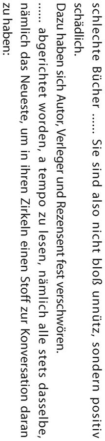
ここは当時の読書の流行を非難している。「無数の悪書、この文学に生い茂る雑草」とか「社交の場で話題とするために、いつもみなが同じもの、最新のものを読むように調教された」などは、母や妹が頭にあったのだろう。負け惜しみに近い感じと思って読むと、よくわかる。
もっとも、悪書というものはある。本のなかには「役に立たない」「有害だ」と断言できるものもある。私が読まない本をいうのは申し訳ないけれども、少女漫画などにはひどい内容のものがあるらしい。
ただ、「有害だと断言するのは誰か」が問題である。そもそも、その体制を覆そうとする革命の本はすべて悪書だ。江戸時代に弾圧された文学のなかには、「残してくれたらよかったのに」といまの私が思うものもあるが、立場によってずいぶん違うのである。
また、ひょっとすると、読み方によって良書のうちに入るような悪書があるかもしれない。だから、なかなか一言で「悪書」とは決められないのだ。これは昔からそうだった。せいぜい「悪書とは、その社会にとって悪と認められるもの」といえるぐらいだろうか。
一般論としては難しい。ただ、ショウペンハウエルは「金儲けのために書いている人」──単なるブックメーカー──を批判しているが、ほとんどコミットメントせずに自著を出す人はいまでもけっこういる。こういう著者の本は、内容のなさからいえば悪書だろう。
それから、本とまではいかないのだけれど、紀要論文は大部分が悪書に連なるといっていい。
この手の論文は、学者が実績作りのために書いている。要するに、業績表に載ればいいという代物なのだ。だから、同じテーマでぎっしり書けば一つで済むところを、バラバラにして三つも四つも書いたりする。水で薄めたようなものもある。
こういうものを真面目に読んだら時間の損である。「紀要論文を読むのは、書いた人間と、植字工と、もう一人ぐらいだろう」と谷沢永一氏がよくおっしゃっていた。いまは植字工がいないから、書いた本人だけが読むぐらいだろう。時間を無駄にさせるという意味では、間違いなく悪書である。
三文文士・生活のために書く作家・著作濫 造 家たちによる、時代のよき趣味と真の教養に対する打撃は成功した。
大衆文学の愛読者が気の毒だという点では、いまの日本は気の毒な人が少なくなっている。
かつて、賞をもらうような小説は読まなければいけないという時代があった。石原慎太郎が芥川賞を受賞した頃は、芥川賞の受賞作を読まないと知識人ではないというような感じだった。しかし、最近は変わった。芥川賞を取った作品も読まずにいられる。
私はだいたい偏見なく小説を読むほうだが、最近、芥川賞を取った小説を読もうとして、読み続けることができなくなった。ずいぶん盛り上げていたが、出版社も何かショッキングなもので売りたいのだろう。石原慎太郎が芥川賞の選考員をやめたのも当然だ。授賞作品のつまらなさを見れば、しようがない。
振り返ってみて、芥川賞が充実していたと思うのは、大江健三郎、開 高 健 の頃だ。小説の質が高かった。しかし、その後、二人とも書くものがどんどん荒れて、大江は何を書いているかさえわからなくなった。
芥川賞、直木賞は有名だけれど、誰が読むだろうかというぐらい無数の文学賞がある。読まなければならないような気になっている人は気の毒だが、気の毒な人がいなくなりつつあるのは幸いである。
なお、有名な賞でなくても社会に影響力を与える例がある。最優秀藤誠志賞だ。すでに四回を数えているが、すべて大反響となった。一回目は田 母 神 俊 雄 氏、二回目は竹田恒 泰 氏、三回目は佐 波 優子氏、四回目は高田純氏である。
わたしたち読者の側に関していえば、非読書術がきわめて重要である。
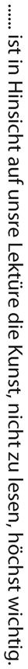
非読書術。現代においては本のみならず、新聞を初め、雑誌、ネット......と情報がはんらんしている。とりわけ新聞の購読は習慣となっている人が多いだろう。ここはあえて日刊の大衆新聞なんか読むなと解釈したい。要するに、「時間を無駄にするべからず」と注意しているのである。私は学生のときにヒルティの『幸福論』で「朝から新聞を読むな」という一節を読んで以来、朝は新聞を読まない癖がついた。新聞を読むのは夜か、翌日である。
朝の時間帯は集中力があるから、その時間を雑に使うのは惜しい。ヒルティの教えは有意義だったと思う。
時期ごとに大半の読者の関心を引く書物を、それだけの理由で手に取ったりしないということに尽きる。
「読まない技術」の重要性を説いたところである。確かに、「あえて手を出さない本」というものはあると思う。たとえば、政治家の小沢一郎氏が百万部のベストセラーを書いたことがあった。知っている編集者が担当したのだけれど、私は読まなかった。その後の小沢氏は書いたことと反対のことばかりやっているといわれている。まともに読んだら損したわけだ。ショウペンハウエルは「あえて手を出さない本」に政治のパンフレットを挙げているが、政治家の本にはそういうものが多いかもしれない。
それから、芸能関係のスキャンダル雑誌はだいたい一年ぐらい経てば古びて、誰も読まないだろう。そういうものとまともに付き合う必要はない。
ただ、人によっては、芸能界のスキャンダルで慰めを得る人がいる。時間潰しをして慰めを得る。もしかしたらストレス解消になっているかもしれない。老齢の楽しみになっている人もいるだろうから、「手を出すな」と一概にはいえないが、ショウペンハウエルから見れば、それは無駄ということである。
読書に費やすことのできる限られた時間をもっぱら、あらゆる時代と民族の偉大な、他の人間からはるかに傑出した精神の生み出した作品に当てよ。評価のゆるがないこれらの作品だけが、真にわたしたちを育て、教え導いてくれる。
「読書に費やすことのできる限られた時間をもっぱら、あらゆる時代と民族の偉大な、他の人間からはるかに傑出した精神の生み出した作品に当てよ。評価のゆるがないこれらの作品だけが、真にわたしたちを育て、教え導いてくれる」
この指摘は本当に申し分のないことだ。文字通り、そうだと思うけれど、「他の人間からはるかに傑出した作品」「評価のゆるがないこれらの作品」と聞くと、嫌らしい記憶がよみがえる。
千葉勉 という先生がいらした。本当に傲慢な人だったようで、東大の英文科から留学させられて、東大の先生になった。助教授として帰ってきたとき、「夏目漱石は十八世紀の小説を講義した。わしは詩を講義する。詩のほうが高尚である」といって総すかんを食った。結局、東大を追い出され、東京外国語大学の先生になった。東京外国語大学に移ってからは音声学という分野に手を出したが、そちらは英文学者としては本業ではなかった。
この方が戦後、上智大学に先生として来られたことがある。戦前の文部省留学生という肩書きはやはり輝いているから、尊敬された。私が大学一年のとき、この千葉先生は「近頃の学生は本を読まない」といい（どの時代の先生もそういうことをいうものだ） 、学生が読むべき百冊を挙げて、みんなに配った。それは学校の要請だったという。
リストを見ると、プラトン、アリストテレスから始まって、カント、ヘーゲル、ダーウィンと並んでいた。一冊読むのに何年もかかるようなものを百点も並べ、大学一年生に何をいっているんだと私は思った。同時に、「ああ、この人は本を読んだことがない」と、軽蔑の念が起こった。ショウペンハウエルはちゃんと読んでいそうだけれど、この先生は実際、自分が挙げた百冊全部を読んだことはないだろう。
私の年齢になると、読んでおいたほうがいいと薦められるのはバイブル、論語あたりだ。それから、岩波文庫に入っている本、講談社学術文庫に入っている本はいずれもいいと思う。しかし、そんなものばかり読んで、歳を取っていけるのかと疑問ではある。歳を取ってみてわかることもあるからだ。
良書を読むための条件は、悪書を読まないことである。
人生は短く、時間と労力には限りがあるのだから。
悪書は知性にとって毒である。
ショウペンハウエルは「悪書は知性にとって毒である」というけれど、毒になるものだろうかと私は首を傾げたくなる。自分の母や妹が書いているような通俗的小説などを、「読んでもしようがない悪書」といっているのかもしれないが。
沼 波 瓊 音 という東大の偉い先生がいた。この方に川柳の話をうかがったとき、「どうやって、いい川柳と悪い川柳を見分けるのか」という質問が出た。これに対して、沼波先生は、「それはたくさん読むよりしようがない」と答えられた。
それはそうなのだ。うまいものとまずいものをたくさん食べないと、うまいものとまずいものの区別はできない。まずいものを食べたことのない人はうまいものとの差がわからないし、うまいものを食べていないとまずいものとの差がわからない。
だから、良書だけ読めというのは無理な注文である。ただ、歳を取って振り返ってみれば、やはり古典といわれているものはいいとわかる。そういういい本があり、「暇があったら読むように心がけなさい」ぐらいしかいえない。そればかり読んでいたら、嫌らしい人間だと思う。
それから、身の程 を知らなければいけない、と私は指摘しておきたい。わかりもしないうちに、わかるわけがない本を読んでもしようがないのだ。
考えてみると、相当歳を取るまで自分の周囲に読書に関するリーダーのような人がいなかったので、私は好きなものしか読まなかった。その点で、わりと読書に対して正直だったと思う。
「少年講談」は一生懸命読んだ。しかし、中学に入っても、夏目漱石はおもしろくなかった。いま考えて、あの頃、鶴岡あたりで漱石を読んでおもしろいという中学生は、天才か嘘つきかのどちらかだ。
『吾輩は猫である』にしても、明治時代に日本の最高水準にいた人たちの談話が含まれている。それを田舎の中学生が読んで、フォローできるということはあり得ない。『こころ』にしても、あんな深刻なことが中学生にわかるわけがない。当時、そんなことは考えないで、読んでもつまらないので読まなかっただけだが、たとえ私が読んだとしてもわからなかったはずだ。
結局、田舎にいた頃、漱石で読んだのは『坊ちゃん』ぐらいだ。それでも、『坊ちゃん』より佐々木邦 の『次男坊』のほうがしみじみとおもしろかった。そうして、しみじみとおもしろいものを読み続けているうちに、難しいものが本当にわかるようになった。
本格的に本がわかるようになったのは大学に入ってからである。当時の上智大学は非常によかった。人数が少なく、先生は優秀だった。田舎から来た者が大学の教室に入ると、先生は外国人。田舎で外国人を見たことはあるけれど、話したりすることはない。その外国人の先生が教える科目が宗教となると、それだけで「何だかすごい」と思うし、内容にしても啓蒙されるものが多かった。
たとえば、中世は暗黒時代だと習ってきたが、宗教学では中世が明るい。古代ギリシャ、ローマの文明は地中海の周辺だけの奴隷のいる文明であり、ドイツやイギリス、フランスは全部奥地だ。そこに大学ができたのは中世だ。こう教わると、「そうなのか」と目から鱗 が落ちる思いがする。そういう話を聞いているうちに、より高次の問題意識に目覚めるわけである。
いま振り返ると、圧倒的に影響力があったのはパスカルだった。改宗の問題が入っているからだ。
それから、アレキシス・カレルの『人間 この未知なるもの』。そして、岩下壮一の『カトリックの信仰』を読んだときは「おお、これでヨーロッパがわかった」という感じがした。他の本を読むと、カトリックのことを知らないでヨーロッパの中世を書いた先生方がいることに気づく。「これは何だ」と思って、そういう日本人の本が幼稚に見えてくる。
上智大学の一、二年生が、私にとって精神の目覚めの時期だったという気がする。そして、三年生になって、初めて漱石がわかった。私は遅いのである。
きっかけは教育実習だ。神楽坂あたりにある高校へ教えに行くことになった。そのときに神楽坂、牛込を歩いて江戸とか東京の雰囲気が何となくわかった。それから、漱石を読み直すと、突然おもしろくなったのである。これは英語の能力が高まり、漢文も勉強したことで、漱石の感覚がわかりやすくなったことも影響したかもしれない。夏休みの間に、『三四郎』から始めて一気に読んだ。そして、歳を取ったらつまらなくなったのはすでに述べた通りである。
わからないものはわからない。だから、私は読まなかった。身の程を知るというのは、意外に読書のためにはいいと思う。
それはヒルティも、若いときに宗教教育を受けてわかったつもりになると、かえってよくないということを注意している。キリスト教の教えは非常に深いものだから、若い者にわかるわけがない。かえってエピクテトスなどのほうが役に立つ。そして、ヒルティはエピクテトスを訳した。若い者にはわからないこともある。このほうが本当だろう。
旧制高校生の哲学好きの余韻は、私の頃までわずかに残っていた。彼らは読んだだけでなく、議論しているはずだ。それでも、すんなりわかるわけはない。しかし先ほど述べたように、繊維質として役立つ。
背伸びするのはいいのだけれども、無理に背伸びばかりしていてもしようがないと私は思う。
読者は印刷されたてのものばかり読みたがる。
つとめて古典を読め。まぎれもない本物の古典を。
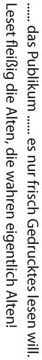
新しく書かれた本ばかり読み、原書はあまり読まないことを批判しているが、これはよくいわれることである。さらに進めていうと、たとえば『論語』について書かれた本をたくさん読むけれども、『論語』そのものを読まないことは少なくない。こういう傾向は、いまの文学研究でいちばんの弊害だろう。
大学の英文科に入ってシェークスピアを専門にすると、シェークスピアの作品を全部読んでいる暇はないかもしれない。というのも、もし、卒業論文に『ハムレット』を取り上げるなら、『ハムレット』について書かれた論文をたくさん読まなければ論文が書けないからだ。だから、意外に、英文科の人は英文の古典を読んでいない。国文科の先生にしても、国文の古典をそんなに読んでいるとは思えない。自分の専門としたものを読むとしても、あとはそれに関する膨大な論文を読んでいる。これを専門家というのである。
ということは、専門家は少し範囲がずれると素人以下の知識になる。専門家と議論を何度もし、それを感じることがあった。
二十年ぐらい前になるが、加 地 伸 行 氏と論争したことがある。彼は京都大学で学んだ漢文の専門家だ。その彼がシナを中国と呼ぶことに、私が異論を唱えた。中国という言葉を普通の人が使うのはしようがない。しかし、漢文を専門にする人がシナのことを中国と呼んだら、日本は東夷ということになる。こんな恥ずかしい言葉を使ってはいけない。このようなことを指摘し、彼が反論して、何度かやり取りした。
私は漢文の専門家ではないが、国文と漢文で中学、高校の先生になる免許状の単位を取った。中高の先生になるための単位を取ると、普通の人以上に一応の基礎はできる。そのおかげで、以後、国語や漢文の本を読んだ。ただし、専門家ではないから、専門家が読まなければならない論文を読む義務はない。『老子』でも何でも、そのものズバリを読んでいる。
論争の過程で「日本で中国というと、自分の国を指す」と私は指摘した。『日本書紀』に「この年新羅、中国に貢物せず」と書いてある。これは新羅が日本に 貢ぎ物を持ってこなかったという記述だ。すると、加地氏は「そんな古いのは駄目だ」という。それならばと、江戸時代の山 鹿 素 行 の『中朝事実』を挙げた。「中朝」はシナの朝廷でなく日本の朝廷のことである。また、会沢正志斎という水戸学者も「中国」を日本のこととして使っている。これに反論はなく、明らかに彼は言い負かされたのだが、謝らずに私の個人攻撃をして逃げた。
考えてみたら、私が受けた漢文の教員免許を取るための講義に「日本漢学史」があった。教えた先生が偉かったといえば偉いのだが、『日本書紀』から始まる日本の漢文の歴史を一年間以上、勉強した。だから、日本の漢文を読んでいる。加地氏はシナの漢文学者だから、日本の漢文を読んだことがなかったのではないか。『日本書紀』が堂々たる漢文で書かれていることも知らなかったのではないか。
最近では、小林よしのり氏と皇室の男系継承に関して論争した。彼は田中卓 という皇學館大学の学長も務めた偉い先生の説を丸飲みしていたようだが、田中氏の『神 皇 正 統 記 』の解釈は一〇〇パーセント間違っていた。これは主観の問題でなくて、文献的に間違っている。それから、『日本書紀』の引用も間違っていた。さらには、議論しているうちに、「胤 」という字の歴史として後漢の人が書いたものを出してきた。後漢の時代は、女が継承者になることなど夢にも考えなかったのだから、それを出して何になるのか。その程度の知識なら、漢文を出すなと私は書いた。田中氏は専門に関する論文は読んでいるかもしれないが、原書をどれほど読んでいるのかと疑問に思った。
国文学では、万葉学者の中西進氏が、山上憶良が朝鮮半島からの渡来人の可能性があるという説を岩波の『文学』に書いて、非常に評判になった。そんな馬鹿なことがあるはずもない。『万葉集』に収録された山上憶良の歌は「そらみつ 大和の国は 皇神 のいつくしき国......」と日本の皇室をたたえ、日本語をたたえている。そればかりか、神功皇后を称える長歌も作っている。中西氏の論には「『万葉集』を読んだのか」といいたい箇所があった。『万葉集』に関する論文は読んでいるかもしれないけれど、『万葉集』は案外、読み込んでいなかったりするのではないか。
ということで、原書を読むことは大事だと私も思う。伊藤吉之助は極端だけれども、翻訳で読むよりも原書でていねいに読んだほうがわかることが多い。
ただ、古人が書いたオリジナルだけを読めとなると、どうだろうか。ショウペンハウエルがいう古人の書いたオリジナルとは、ラテン語、ギリシャ語で書かれたもののことだ。そんなものばかり読んで、現代人の書いた解説は読まない。それは極論であって、原書ばかり読んでもしようがないと私は思う。現代の凡人の浅薄で退屈なおしゃべりのなかにも、自分と同質であるために──同質ということは同じ程度ということだ──けっこう楽しいものも教えられることもある。
原書は原書でいいのだけれど、原書を読んでいい影響を受けるだけの成熟度があるかどうかも問題だ。ないとすれば、成熟するまで待たないといけない。
原書に重きを置きすぎるのも、偉い人が陥 りやすい悪いクセである。
それに加えてさらに彼らには低俗な、個人的な意図もある。
日々刊行される凡俗作家たちの駄文を読むために、もっとも高貴にして希有な精神の所産を読まずにおく読者の愚かさと本末転倒ぶりは信じ難いほどである。
「『低俗な個人的な意図』のために書いている」「偉大な人物の本は、本棚に眠ったままだ」。これはこの通りだと思う。ただ、眠ったままの本から本当にいい本を見出すのは、一生に何冊かあれば満足すべきものではないかという感じもする。
また、ここでは新しい本がどんどん印刷される本の洪水の時代を嘲 笑 ってもいる。いまもそうだが、ドイツは書籍の発刊数が多い国である。ただし、日本のように出版社が東京に集中していない。ビスマルクがドイツ帝国にまとめるまで統一されていないから、ミュンヘンやハレ、ライプチヒなど、文化の中心があちらこちらにあり、それぞれの町に大きな出版社があった。カントは『純粋理性批判』をケーニヒスベルクの出版社で出せなかったので、ハレから出した。「ここの町は駄目だ。あちらの町に行こう」ということができたのだ。
さて、いまの日本も本の洪水に見舞われているが、本の洪水を嘲笑うより、もっと嘲笑うべきものが多い。メール、Twitter、テレビ等々、「蠅 のように大量に孵 化 する」ものはたくさんある。
ちなみに、日本では本の洪水が江戸時代から起こっている。おもしろいのは、十 返 舎 一 九 の『東 海 道 中 膝 栗 毛 』はあまりに読まれたので、完本が一冊も残っていないのだそうだ。だから、リプリントする会社がほうぼうから集めたという。
その代わり、四 書 五 経 の本は数多く残っている。私は漢文の教員免許の単位を取るときに『書経』を一年間読んだ。シナの政治家になるなら少しは役に立つかもしれないが、私には何の役にも立たなかった。
本物の文学と、うわべだけの文学が存在する。本物は時代を越えて残る文学へと成長する。本物の文学は真摯に、静かに、そしてことのほかゆっくりとわが道を行く。うわべだけの文学は、あたふたと駆け抜けてゆく。
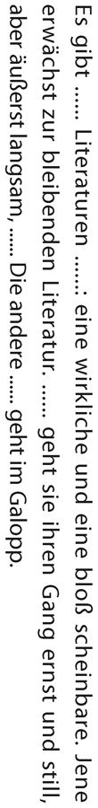
いつの時代にも文学にはまことの文学とうわべの文学の二種類があり、学問や詩のために生まれてきたような人が書いたものは、おのれの道を真摯に静かに進む。これはショウペンハウエルが「自分がそうだ」といいたいのだと思う。また、学問や詩のために生まれてきたような人の歩みは非常に遅く、ヨーロッパでは一世紀の間に十ぐらいの作品しか出ないというのは、自分の本がそのうちの一冊だ、といいたいのだろう。ここで「リテラトゥール」というのは狭義の文学でなく、文学・歴史・哲学などを含むドイツ語である。
「うわべだけの文学は、あたふたと駆け抜けてゆく」。要するに、稼ぐために書いたような本がどんどん出るが、そんなものは読む価値がない。そして、「流れ去る文学」と「とどまる文学」があるという。「流れ去る文学」「とどまる文学」はいい表現で、芭蕉でいえば「不易」と「流行」だ。不易だけを求めても駄目だし、流行だけを求めても駄目であり、両方あると芭蕉はいった。不易と流行のバランスが大事だとした点で、芭蕉のほうが偉い。
ちなみに、私はベストセラーをなるべく読もうと心がけている。ベストセラーといわれるものは、少なくともその時代の何かを反映していると思うからだ。つまり、時代を見るために、過去のベストセラーに関心がある。
だから、大正十四年からの『キング』を全部持っている。『キング』が当時いちばん読まれた雑誌だからである。夏目漱石のいちばん売れた本が、一年間に一万部売れるかどうかというときに、『キング』は百万部ぐらい売れた。それを見ると、いい悪いは別として、「当時はこうだった」「こういう意見があった」ということがわかる。
昔、島田清次郎という人の書いた『地上』という本が一世を風靡したという。その後、誰も読まない。吉屋信子の『良人 の貞操』は、良人に貞操があるのかということで、これも受けた。なぜ、そんなものが売れたのか。そこにその時代の日本の状況がよくあらわれているはずだ。
ベストセラーはいまの時代を読むことにも使えそうだけれども、終わってしまったベストセラーを読むほうがおもしろい。百年経っていたらなおいい。「流れ去る文学」になってしまうかもしれないベストセラーも、見方によれば使い道もあるし、参考になる。
書物を買うのは良いことだ。ただしそれを読むための時間もいっしょに買えるならば。だがたいていは書物を購入することで、その内容までわがものにしたと勘違いする。
「書物を買うのは良いことだ。ただしそれを読むための時間もいっしょに買えるならば」。確かに、読む時間もいっしょに買えればいいが、そんなことはできない。どんなにジタバタしたところで、一日は二十四時間だ。それを克服して読書の時間を増やす手はあるか。一つ、ある。ぼけないで長生きすることだ。人生の時間を増やせば、読む時間も増える。
なお、速読すればたくさん本を読めるのではないかという人もいるだろう。易しいものは自然と速読できる。難しいものは速読できない。
このあと、「読んだ本の内容をすべて知識として自分の中に保存しておきたいと望むのは、これまで食べたものをすべて自分の体内に取っておきたいと思うようなものだ」といっているのだが、これは前にも出てきた比喩だ。要するに、本を読んでどんどん忘れてもいいのである。忘れるようなものは要らないとあきらめてかまわない。排泄されたものは要らないと思うのと同じことである。
読んだ本のなかで覚えているものだけが栄養になった。排泄されたものは、腸を作ったりして、それなりに役立っている。そう思えばいい。それに、忘れても何かの拍子で思い出すこともある。また「読まない本は買わない」と言ったら、買う本はほとんどなくなるだろう。「積ん読」の徳というのもある。ショウペンハウエルだって、買った本をすべて読んだわけではないと思う。
だれしも自分の関心にあうもの、すなわち自分の思想体系や目的に合致するものしかとどめておけない。
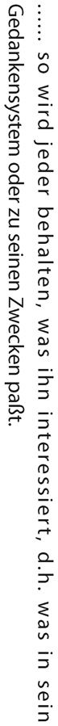
「だれしも自分の関心にあうもの、すなわち自分の思想体系や目的に合致するものしかとどめておけない」といった上で、ショウペンハウエルは思想体系がないと駄目だとしているが、必ずしもそうではないと私は思う。バラバラの知識は、それなりに必要だ。
ショウペンハウエルが思想体系を重要視するのは、彼の時代がカントの影響下にあったからだ。ヘーゲルも体系だし、ショウペンハウエルも彼なりに体系を作った。彼には、体系に入れなければ知識ではないという感じがあったのだろう。
したがって、思想体系を持たずとも、目的があって読めば、それに適 うもの、合うものは吸収していくのが自然である。
自分の読んだものが身についたかどうか、確かめる方法がある。それは「書くこと」だ。何かを書くとき、まだ考え始める前に、参考となる知識が浮かんでくることがある。意識しないのに浮かんでくるわけだから、しっかりと吸収されていたといえよう。
本を書く人は書こうと思って読むから、どうしても博識になる。また、書けば必ず最終的にチェックするので知識が正確になる。書くことをあまり称えて紙の無駄を生じさせるのはよくないけれど、個人的な修養の面からいえば、書くことは非常に重要である。
逆に、書くときに何も浮かんでこないのは、知識が身についていないということだ。いってみれば、書けない人には知識が残っていないのである。それから、少しだけ知識があって、いつも同じことをいう人がいる。それを「蓄音機みたいだ」と評したのは、本間祐介さんである。
本間祐介さんは元来、釣竿師だった。非常に賢明な人で、戦後の難しい時代に酒田の本間家を背負い、うまく残した。私は、本間家が出す奨学金をもらっていた関係で、夏休みに帰郷すると本間家に挨拶に行き、本間祐介さんと一緒に食事をして、話をする。そのとき、本間祐介さんが「知識というものは減るものだな」とおっしゃったことがあった。
「同じ知識でも、一度使うと減るんだよ。絶えず入れていないと減る。そういえば、同じことを蓄音機みたいに繰り返す人がいる。知識が減っていることを意識していないから、同じものしか出せない。本当は同じものを二度も三度も四度も出してはいけない。進歩していれば、必ず変わっていくはずだ」
本間祐介さんの「蓄音機みたいになる」とは、「単に知識が減るのではなくて、インパクトがなくなってくる」ということだと、その頃の私は解釈した。
「反復は習得の母」といわれる。とにかく重要な書物はいずれも、間を置かずに二度読むべきである。
二度目にはテーマを文脈に沿ってよりよく把握できるし、結末を知ることによってはじめて冒頭部分を正しく理解できる。
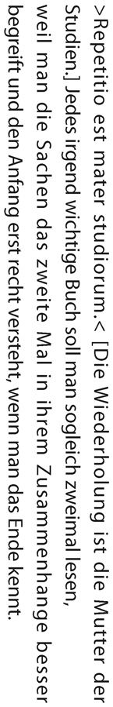
「結末を知ることによってはじめて冒頭部分を正しく理解できる」。これは探偵小説がそうだ。案外、いろいろと見落としているところがある。探偵小説でなくても、二度読めばよくわかることがあるし、感心するところが違う。個人的にはそれが読書の楽しみだと思っている。
谷沢永一氏と対談で『論語』の本を作ろうとしたとき、お互いに感心したところを二十個ずつ選んだ。合致するところはわりと多かった。合致しないのもある。それがまたおもしろいのだが、感心するところを選ぶため、当然、対談の前に『論語』を通読した。最初に通読したのは大学のときだが、通読はこれが三度目ぐらいだった。以前に読んだとき、感じたところは印を付けた。そこと、対談するために読み直して印を付けるところがずいぶん違った。「ああ、なるほど。これが古典の意味か」という感慨を持った。
繰り返し読むというのは、どれぐらい自分が変わったかがわかるという楽しみがある。「反復は習得の母」であり、「間を開けずに二回繰り返して読まなければならない」とショウペンハウエルはいうのだけれども、間を開けてもいいと私は思う。一回目に感じたところと二回目に感じたところの差を楽しめる。精神の成長か堕落かはわからないけれども、自分の変化がわかる。「二十代のときはこんなことを考えていた。いまはこういうふうに考えるようになった」。それを知ることこそ、読書の醍 醐 味 ではないか。漱石は感想をその本の欄外に書き込む習慣があった。今それを見ると、漱石がいかに真剣にその本ととり組んでいたかがわかる。私も愛読書には書き込みが多いが、昔の書き込みを見ると、感心することもあるし「幼稚だったなァ」と思うこともあって楽しい。
作品は著者の精神のエッセンスである。
それゆえ高度な精神文化はわたしたちをしだいに、もはや人間にではなく、ほとんど書物にだけ楽しみを見出す境地へと導く。
「作品は著者の精神のエッセンスである」。その後、こう続く。「たとえ著者がこれ以上ないほどの人格者であったとしても、その作品は彼の日常とは比べものにならないほど内容が豊かである」「作品は著者をはるかに凌駕し、著者のずっと先を行くものなのだ」。作品が著者自身より立派だということは大いにあり得る。しかし、そうでないこともある。
たとえば、幸田露伴に会った偉い人たちの座談を読むと、「この人が書いたものは本当にこの人の一部分だったんだな」という印象を受けたくだりが出てくる。谷崎潤一郎などは本当に露伴を拝まんばかりに尊敬していた。そういう先生につくことができたら、本当にすばらしいと思う。
「書いた人に興味をもつのではなく、書かれた書物だけに真の心の喜びを見出そう」。こうも書いているが、私はこれには反対である。なぜならショウペンハウエルの哲学もいいけれど、ショウペンハウエルの生涯もおもしろいではないか。
また、つまらない本でも、重大なる影響を受けることがある。私にとって、『エリザベス・アプルトン』という小説がそうだった。この本を読んだ日本人は、ほとんどいないだろう。文学史に残らないようなアメリカの作家が書いた通俗小説だ。
どうしてそんなものを読んだのかというと、アメリカで客員教授をしていた一年間、通俗小説ばかりを読むことにしたからだ。向こうの庶民がおもしろがって読む通俗小説を、われわれは普通読めない。彼らと同じぐらいに楽しめるようになりたいと思い、とにかくたくさん読んでみた。そこで出合った一冊が『エリザベス・アプルトン』だった。
話の筋を簡単に紹介しておこう。エリザベス・アプルトンという女性がいる。わりと金持ちの女性で、亭主は大学の先生だが、子どもが不良になった。不良になったときに、その子どもが親に向かって放った言葉がある。
「自分がヨーロッパに一年ぐらい行かせてくれといったときに、親父は許さなかった。そして、自分は三流画家の絵を買っていた。そのお金でヨーロッパに行かせてくれたら、俺だって麻薬なんか吸わなかった」
読んだのはノースカロライナ州だったと思うが、東京を離れ、外国で読んだせいもあるのか、感じるところがあった。それは「子どもというのは、必要なときに金を使ってやらなければ駄目だ」ということだ。
エリザベス・アプルトンの夫が死んでから、所有していた絵を売ったりして遺産が入るかもしれない。しかし、そのときは子どものほうも歳を取っているから、お金は若い頃のような価値がない。若いうちなら、お金には人生を変える力がある。
そう考えて、子どものためには借金してもいいと覚悟を決めた。三人の子たちはいずれも音楽の道に進んだ。娘はピアノだから高いといっても知れたものだけれど、他の二人は弦楽器だから、お金がかかる。留学もさせた。おかげで、大学を辞めるまで、銀行に借金がなくなることはなかった。
いま、みんな音楽で飯を食べている。最近、次男は紀尾井ホールで独演会をやったが、子どもたちはみんな好きなことをやらせてもらったと感謝し、借金のほうはいつの間にかなくなった。
使わないで貯めていたら、ちょっとした資産家になったかもしれない。しかし、子どもたちは心にもない方向に進んでいたに違いない。そのお金を父親が死んでからもらったところで、子どものほうも歳を取っていて、美食といっても食欲がなくなっていたりするだろうし、旅行しようといっても億 劫 になっていることも考えられる。
娘が音楽をやりたいといった家内の同級生の家では、私と反対の選択をした。うちが多少先に始めていたから、音楽学校はこのぐらいかかって、楽器にはこのぐらいのものを買うのだと、音楽をやるのにかかるお金の額を教えた。そこの家は豊かなはずなのだが、それを聞いて音楽の道に進むのをやめさせたらしい。
娘に音楽をやらせてよかったかどうかは、わからない。しかし、少なくともやりたがった娘は満足したはずだし、やりたいことをやらせてもらえなかったら、向いていない学科を選んでしまった可能性は大いにある。
死んでから遺産としてお金を渡すのは愚かだと思う。家内の両親は戦前の人だから、節約に努め、生きているときはほとんど利用したように見えなかった。亡くなったあと、不動産も含めると、何億円かの遺産があった。親が死んだとき、息子たちはみんな定年退職前後だったので、遺産相続は退職金が増えたようなものだ。分けてもらったら、外国に旅行するなどして、使って終わりである。
だが、それを子どもが若いときに使っていたら、ずいぶんと違ったはずだ。家内の兄弟はみんな頭がいいが、そのうちの一人は哲学をやりたかったという。ところが、昔流の考えで、「そんな飯の種にもならないもの」といって、親はやらせなかった。それで一流会社に入ったから、それでもよかったかもしれないが、私は生活が困らないだけの資産はあったから、哲学をやらせればよかったと思う。
お金の使い方はいろいろある。
一時、別荘を買うのがブームになったが、家内は欲しがらなかった。たまにしか滞在しない別荘なのに維持費はかかるし、行ったら行ったで掃除をしなければならない。そんなものに使うなら、いま住んでいる家に使ったほうがいいという考えだった。おかげで、私の自宅は非常に住みやすい家になっている。いまでも金を惜しまず、というより、家内は他には一切かけないで、家にかける。家は毎日使っているから、かけがいがあるという一つの哲学だ。
私は本にお金をかけ続けた。自動車が好きな人は、自動車にかけてもいいと思う。
話がだいぶ脇道に逸れたが、「子どもというのは、必要なときに金を使ってやらなければ駄目だ」という悟りみたいなものを何が開いたかというと、『エリザベス・アプルトン』という、日本では誰も知らないような通俗小説だった。だから、どこからどういう人生のヒントが来るか、わからないのである。
もっとも、読むタイミングも重要だ。いちばん上の子どもが小学校二年生、下に二人いた。それから、あの頃は家族を連れていけないので、私だけが家族と離れていた。高度成長という時代もよかった。いまなら楽器が二倍、三倍の値段になっていて買えないだろう。
それに、結果が出ないとわからないことがある。『エリザベス・アプルトン』を読んだのは四十歳前後の頃だ。私の得た悟りのようなものが正しいかどうかは、四十年経って「正しい」とわかった。
いずれにせよ、本というものは簡単に「価値がある」「価値がない」といえないと思う。
古典古代の作家を読むことほど、精神を元気づけてくれるものはない。
新鮮な岩清水によって心身爽快になるのと変わらない。
「古典古代の作家を読むことほど、精神を元気づけてくれるものはない」といって、三十分だけでも古典を読めばさわやかになる等々、ショウペンハウエルは古典を大いに称賛する。
ゲーテと同時代人だった彼の時代は、まだドイツ文学と称するほどのものはない。それ以前を探せば作品はあるだろうが、ドイツ文学といえるほどの大したものはなかったと思う。ゲーテが偉くなってから、ドイツ文学がドッと出た感じだ。となると、ギリシャ文学やローマ文学が古典とならざるを得ない。
また、「これは古典語とその言語の完璧性のためなのだろうか？ それとも数千年にわたってその作品の価値が損なわれることも、弱められることもなく残っている作家その人が非常に偉大だからだろうか？ おそらくその両方だろう」といって、ギリシャ語、ラテン語の完璧さを指摘しているが、言葉の違いというのも大きい。ショウペンハウエルたちはラテン語、ギリシャ語で古典をそのまま読める。ドイツ語は日本の古語のような感じの言葉だから、ドイツ語で読んでいると、まどろっこしく感じるようなところがあったのだろうと思う。その点、ギリシャ語やラテン語の原書は明快で、わかりやすいと感じても不思議ではない。
「どうしても自分には『源氏物語』が名文だとは思えない。のたらくたらしている」といったのは菊池寛だったか。漢文的な素養があれば、日本の古文をすっきりしないと感じるのと同じだ。
幸田露伴などは「シナに比べて日本のものには読むものがない」といっている。露伴は漢文が徹底的にできた人だから、日本文学を卑しむところまではいかないけれども、ちょっと低く見るところはあった。
露伴は京都大学に教授として呼ばれたとき、一年足らずで辞めて東京に戻った。なぜ帰ってきたかと聞かれたとき、「鴨川よりも利根川のほうが大きな魚が釣れる」といったそうだが、本当は違うだろう。露伴は江戸文学を担当した。彼の目から見ると、江戸文学のほとんどがつまらない。江戸時代の読 本 などは女郎と番頭の心中といった話ばかりだから、同じようなテーマにうんざりしたと思う。せいぜい残るのは、芭蕉とその周辺の俳句と俳諧ぐらいだ。それは潁 原 退 蔵 という専門家がいた。露伴の出番ではない。
そういう露伴が「日本には読むものがない」といったのはわかる気がする。確かに、『平家物語』はいいけれども、シナの『史記』などは更に読みごたえがある。日本人の古典には『万葉集』などいろいろあり、芭蕉あたりも含まれるかもしれないが、ドイツ人にとってのギリシャ、ローマの古典にあたるのは日本人にとってのシナの漢文だろう。四書五経などのシナの古典があるのは幸せなことである。
シナの古典とは、いまはいなくなった周や漢、唐の人たちが残した書物をいう。もし、現在のシナ人が『論語』とか『書経』とか『詩経』を俺たちの先祖の書物だといって威張るとすれば、ポーランド人がギリシャ、ローマの文学を俺たちの先祖の文学というようなものだ。その点を間違ってはいけない。
民族でいうと、漢までがほぼ周の民族と関係がある。その後、漢が滅び、『三国志』を経て、五胡十六国の時代になる。五つの異民族が十六の王朝を立てたという時代だ（そのうち三つは漢民族） 。最終的にこれをまとめたのが隋だが、隋は鮮卑で満洲のあたりからやってきた。
彼らは絵文字だけでやっていた民族で、周とは全然、関係がない。次の唐はものすごく大きくなって、西の世界と接触する。唐の都の酒場には、碧眼の女がいたりした。そうすると、詩は唐がいい。文は漢までだ。その後は全部繰り返しで比較的つまらない。いわゆる東洋的反復である。
ちなみに、シナ文学の『唐詩選』などはシナであまり流行らず、日本で流行った。シナ人にとっては鑑賞でなく、科挙の試験に通る文献が重要だからである。『唐詩選』を読んでも得にならない。『唐詩選』は日本でいちばん普及していると思う。『唐詩選』を集めたシナ人はたいしたものだけれども、日本人の鑑賞力というのはすごかった。
それから、『十八史略』も科挙に関係がない。だから、シナ人はあまり読まなかったが、日本ではものすごく読まれた。当時のシナ人にしてみれば、『史記』があるのに『十八史略』が何だ、という感じだっただろう。ところが、『史記』はだらだらしている。『十八史略』はコンパクトで、『史記』のいちばんいいところは全部取ってある。
たとえば、『十八史略』には、項羽が戦いに負け、四 面 楚 歌 で死ぬ場面もちゃんと入っている。
「力山を抜き 気は世を蓋 ふ
時に利あらず 騅 逝かず
騅の逝かざるを 奈 何 にすべき
虞 や虞や 若 を奈何 せん」
という有名な一節も載っている。そして、渡し場の人が「大王、急いで渡れ。渡ったら、兵隊がまた集まってくれますよ」といったら、「自分が川を渡るとき、何千人もの兵がいた。いま、還るとき、一人もなし。どうして江東の父兄にまみえんや」と答えて、項羽は自ら首刎ねて死す、とある。
『十八史略』があれば『史記』を読む必要はないほどだ。江戸時代の人が一生懸命に読んだものは、いまから見ると、いちばんいいと私は思う。
日本人は大したものである。
ドイツ語は古典語の完璧さを若干ながら有している。
ショウペンハウエルは、ドイツ語が古典語の完璧さをいまだに留めているといい、ドイツ語を優秀な言葉としているが、その理由は文法がきちんとしていることだ。いまでも、見方によれば、英語に比べてドイツ語は格段にしっかりしている。格変化は全部あり、古典語の変化形がそっくり残っている。英語はそれらがみんな崩れてなくなってしまった。ちなみに、ギリシャ語も主格、属格、対格、与格がある。そういうことを指していると思う。
ドイツ語の特徴について少し触れておくと、日本人が日本語で難しいと思う言葉も、ドイツ語の場合、ドイツ人にとってはわかりやすいものがある。たとえば、『純粋理性批判』の「純粋理性」をドイツ語でいうと、reine Vernunftである。reinというのは「きれいな」という意味だ。これは普通に使う言葉である。Vernunftは、vernemenの名詞で、vernemenというのは「聞き分ける」という意味である。要するに、外界のものをどう聞き分けるかという能力を、つまり外界についての「認識能力」を純粋に考えるというのが純粋理性である。
昔、ドイツへ留学した学者が、ドイツ人の女中さんのお尻をちょっと触ったかなんかした。すると、その女中さんが、「Sei ver nftig!」といったそうである。直訳すると、「理性的であれ」という意味だが、周囲のことをvernehmenせよということで、やわらかくいえば「よくわきまえなさい」「状況を見なさい」ということだ。Vernunftは『純粋理性批判』の「理性」だから、日本人には難しい言葉と受け取られるが、それは通常語なのである。その哲学者はVernunftという単語を聞いて『Kritik der reinen Vernunft』（『純粋理性批判』） を思い出し、「ドイツでは女中までカントの言葉を使った」と驚いた。そういう笑い話がある。いや、本当にあった話かもしれない。
それから、下等な三流作家によってドイツ語が組織的に破壊されている、とショウペンハウエルが考えた根拠は、具体例がないので何ともいえないが、いまの日本に喩えてわかりやすいのは歌かもしれない。たとえば、昔の流行歌の「君恋し」。
「宵闇せまれば 悩みは涯なし みだるる心にうつるは誰が影 君恋し」
言葉が美しいではないか。唱歌でも、例えば佐佐木信綱の『夏は来ぬ』は、「忍び音もらす」「玉苗植うる」「夕月涼しき」「五月闇」など、美しい言葉で綴られている。
それはほかの唱歌でも同様で、昔の唱歌は美しい日本語の宝庫である。
昔の流行歌も唱歌も言葉が美しい。ところが、いま吉祥寺を歩いて聞こえてくるストリート・ミュージシャンの歌は、「君を忘れないんだよ」などと、実に幼稚な言葉、小学校一年生程度の言葉を並べている。それに近い感覚がショウペンハウエルにあって、「仲間うちだけに通じる薄っぺらな符 丁 になりつつある」といったのではないだろうか。
思想は世界を動かす。
それゆえ哲学は本来、正しく理解されれば最強の実利的な力ともなる。
その［文学史］枢要部分は哲学史である。哲学史こそはその［文学史］根音バスであり、それを越えてもう一方の歴史にさえも影響を与える。
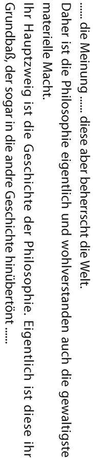
歴史には政治の歴史と文学・芸術の歴史の二つがあり、政治史は意志であり、文学・芸術史は知性だとショウペンハウエルは考えた。ここは政治史に対比させて文学史を語っているのだが、「文学史の枢要部分は哲学史である。哲学史こそは文学史の根 音 バスであり、それを越えて政治史にさえも影響を与える」としていて、哲学を非常に高く評価する。
文学史に哲学が入るのか、と思われる読者もいるだろう。ドイツ語のみならず英語でもある程度いうのだけれども、リテラトゥール（文献） という言葉を使うと文献学のことであり、これにはしばしば哲学も入る。文学史が文学だけの歴史である日本とは感覚に少しずれがある。いまはドイツもイギリスも日本の文学史と同じように文学史の範囲は縮まっているが、ショウペンハウエルの頃は完全に哲学が入るのである。
そして、哲学は和音の基礎の音のようなものというのは、カントや自分の哲学が基になって、その影響を受けた小説や詩が出てくるといいたかったのではないだろうか。いまの日本で哲学や思想が文学の基調となることはあまり考えられないが、そういうことはある。『論語』が哲学だとすれば、それが基調となってできたシナ文学もあるだろうし、『史記』には四書五経などが基調としてあるだろう。その意味では正しい。
なお、文献を含んだ文学史で重要なのは何語で書いてあるかだ。英文学史であれば、英語で書いていなければ入れるわけにはいかない。フランシス・ベーコンは偉大なる哲学者だけれども、文学史に入るのは『随筆集 』ぐらいだ。残念ながら、いちばん肝心なものはラテン語だから入らない。ジョン・ロックは英語で書いているから入れる人は入れる。
ショウペンハウエルは哲学といったが、文学の基調となるものを、一般に「学問」といわれるものと理解してもらえばいい。そうすると、ダーウィンの進化論は当然入る。ダーウィンの進化論は、その後の小説のほとんどが間接的に影響がある。そういうふうに考えればわかるのではないだろうか。
文学史の少し詳しい本だと、文学を扱うのと同時に、その基調となった学問が取り上げられている。英文学では「アダム・スミスが出た」ということが入る。十九世紀はハーバート・スペンサーの影響が大きい。フランス文学だと、アルベール・カミュあたりが入りそうだ。アメリカ文学はウィリアム・ジェームズの心理学などが入るかもしれない。
世界史においては、つねに半世紀単位が考察の対象になる。これに対し文学史においては、同じ半世紀がしばしば全然問題にされない。拙劣な失敗作は無視されるからである。
わたしたちは学問・文学・芸術の時代精神がおよそ三十年ごとに破産宣告を受けるのを見る。
毎度毎度の誤りが昂じた末、ついには自らの不条理の負荷に耐えられなくなって崩壊するのである。
カントの全盛期につづいてすぐに別の時代がやってきた。納得させるかわりに感銘を与えたり、根本的かつ明晰であるかわりに、きらびやかで誇張的で、なかんずく晦 渋 であるように努めた。真理を探究するどころか、陰謀に熱心になった。
いまやカントにつづく世紀の前半のドイツ哲学の完全な無資格ぶりが明らかになっている。
フランスにおけるベルニーニ派の彫刻は古代の美のかわりに低俗な自然を、古代の素朴さと気品のかわりにメヌエットの作法を表現した。彼らは古典主義への回帰が起こったときに破産した。
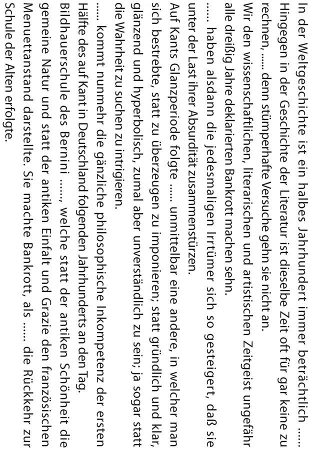
世界史では半世紀がつねに考察の対象になっている。なぜなら、世界史の素材はたえず流れ去り、いつも何かが起こっているからだ。一方、文学史は半世紀間、いかほどのものとも見なされない。──このあたりは、この五十年、文学の基調となる哲学が不作であったことを、ショウペンハウエルがいいたかったのだろう。
続いて、人類の知識の進歩を惑星軌道のイメージでとらえるといいと語り、プトレマイオスの周転円を使うと、人類がめざましい進歩をとげた直後に道を誤りやすいことや、後世になって名声を博した人物が同時代人から称賛されなかった理由、さらに同時代人から称賛された人物が後世になって忘れ去られる理由が説明できるという。
「惑星軌道」と「プトレマイオスの周転円」というのは難解な比喩だが、ショウペンハウエルの立場を考えるとわかりやすい。
惑星軌道上で周転円の動きをすると、元に戻ってくる。フィヒテ、シェリングの哲学とヘーゲルの風刺は周転円であり、ぐるぐる回り、元に戻った。カントのような偉い人の哲学は惑星軌道を離れて元に戻らず、どんどん進んだ。つまり、進歩するものと、ぐるぐる回って元に戻るものと、哲学には二種類あるというイメージをショウペンハウエルは示したのである。そして、カントは大いに進め、自分はそれを引き継いでさらに進めたけれども、カントの後に続いたフィヒテ、シェリングはぐるぐる回るだけであり、ヘーゲルに対しても批判的だから、フィヒテ、シェリングと同じく位置づけている。
また、時代を代表する学問・文学・芸術の精神が三十年ごとに破産宣告を受けるのは、そのぐらいの年月で誤った説が行き詰まり、自壊するからだという。これもヘーゲルの哲学が流行らなくなったことをショウペンハウエルなりに分析したことだと思う。
確かに、学問の世界ではそんなところがある。たとえば、言語学でも、比較言語学がどんどん伸びる時代は、偉い学者が出ている感じがある。ところが、そのうちにくだらないことを言い出す人があらわれる。一時期は流行するのだけれど、いつの間にか消えてしまう。
私の体験を述べると、ちょうど教員になる頃、構造言語学が流行った。たまたま友人がブリタニカの日本支社長をやっていて、「ブリタニカの付録に構造哲学の解説書を付けるので、構造言語学について書かないか」と誘われた。これを機会に構造言語学を勉強しようと思ったので引き受け、構造言語学のテキストを書いた。そこに言語学史も加えて、「構造言語学はそのうち終わる」と予言した。
なぜ、構造言語学が終わると考えたのか。構造言語学の出発点はアメリカ・インディアンの言語学だった。インディアンは文字を持たない。つまり、文献のない人たちの話し言葉の研究から始まったのである。
ところが、西洋の言語学はホメロスの詩を読むために始まったという歴史がある。ホメロスの死後、千年ぐらい経ったヘレニズムの時代に、アレキサンドリアあたりで生まれた。当然、ホメロスの詩の研究から始まり、文法などの体系ができる。文法を頼りに古い文献を読む。その伝統が続いて、ローマ時代になると、ローマの文献を読むために、森の中のゲルマン人が文法を勉強した。
こういう流れで言語学は近代を迎え、本を読むための言語学と本のないものを相手にする言語学の二つができた。そして、本のないほうの言語学が、一時、言語の本質を明らかにするかのごとくうたわれた。事実、その面があったけれども、読むものがないのだから、実は全然つまらないということがわかってくる。
構造言語学が駄目だとわかったら、構造言語学に人間的なものを入れようという流れが生まれ、チョムスキーが出てきた。そうなると、フンボルトに戻るという話になってしまう。だから、いま、言語学でいちばんの安定した入門書は、一九二〇年頃に出たサピアの『言語─ことばの研究序説』などの本である。いまの言語学は流行学派的な文法論に傾きすぎている。
ドイツの哲学も、本当に馬鹿馬鹿しくなったらしい。カントは偉いけれど、カントにくっついている哲学の論文はいっぱいある。いまでは誰も読まない。ヘーゲルについての論文も山のようにあるけれど、誰も読まないと思う。
そういうことを考えると、「学問をおし進めているもの」と、それにくっついている「どうしようもないもの」が現実にあるのだ。ショウペンハウエルのいいたいことはよくわかる。ただし、ショウペンハウエルはカントの次──ヘーゲルのことだと思う──もどうしようもないとしているが、これは間違いであろう。
また、十九世紀前半におけるドイツ哲学の不作ぶりは明白であり、イギリスの作家がドイツ人は思索する民族だというのは悪意に満ちた皮肉、とまでこきおろしているが、ドイツ哲学の不作について、田中美知太郎先生がおもしろいことをおっしゃっていた。
「ドイツは哲学の国で、フランスは文学の国といわれる。振り返ってみると、これは逆のようだ。近代においては、ドイツに哲学教授がいっぱいいるけれど、これという哲学はない。しかし、フランスにベルクソンなどが出ている。フランスにこれという文学がなく、ドイツにトーマス・マンなどの大きな文学が出ている」
めざましい進歩をとげた後は評価が高くなる。しかし、その後の時代は「道を誤りやすい」とショウペンハウエルがいうように、学問をおし進める偉大なものにくっつく「どうしようもないもの」がはびこるから、ドイツにこれといった哲学がなく、フランスにこれといった文学がなくなるのであろう。
なお、カントの活躍した世紀とか、ヘーゲルとその弟子たちが馬鹿げた本を書きなぐり、誰の目にもそれがペテンであると明らかになった時代というあたりは、読書についてというよりも、哲学史の解説をしている。その評価はショウペンハウエルの個人的感懐である。彫刻のことなども書いているが、これもこういっているというだけのことだ。
文学史上の少数のうまくいった出産は、陳列室に探す必要がない。彼らは不死の者として、永遠にはつらつとした青春の姿で、悠然と歩いている。
文学史（哲学書、歴史書を含む） は、長期間にわたって保存をするためのアルコールの役目をはたしている。少数のうまくいった出産は、カタログをめくって探す必要はない。彼らは不死の存在として、永遠に若々しい姿のままで颯爽と歩いている。これがまことの文学を構成すると、ショウペンハウエルはいう。
要は、文学史に関係なく偉大なる名前のものがあるといっているのだが、それは当然のことである。われわれが芭蕉を読むのに、江戸文学史は要らない。それと同じだ。
悲運の文学史には、諸国の国民がたいそう自慢する偉大な作家や芸術家たちに対して、その存命中にはどのようなひどい扱い方をしたか、記述して欲しい。
それにもかかわらず、この人類の教育者が困難な闘いがやりとげられ、不滅の月桂冠を授けられるまで、彼らの仕事に対する愛がいかに彼らを保ち続けたか、悲運の文学史には記して欲しい。
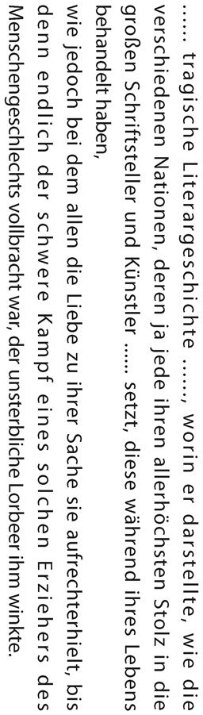
「悲運の文学史には、諸国の国民がたいそう自慢する偉大な作家や芸術家たちに対して、その存命中にはどのようなひどい扱い方をしたか、記述して欲しい」。というところは、ショウペンハウエルの個人的な恨みである。ただ、ゴッホの絵は生きているうちに一枚も売れなかったとか、一枚しか売れなかったとか、笑い話みたいなエピソードがあるから、まったく見当外れではない。
「彼らの仕事に対する愛がいかに彼らを保ち続けたか、悲運の文学史には記して欲しい」。というあたりになると、もうレトリックだ。最後には「重い鎧 は、翼の衣に、苦しみは短く、喜びは永遠」という詩になるが、本物はそのようになるというショウペンハウエルの思いを反映させたのだろう。
ショウペンハウエルは古典をきわめて重くとらえているが、最後に「どういうものが古典になるか」を考えてみたい。
「二十世紀のイギリスで最大の小説家」という評価もあるアーノルド・ベネットが『Literary Taste』（文学趣味） という本を書いている。あまり厚い本ではないので、英文科で教科書によく使われたものだが、そこに「何が古典として残るか」が出てくる。その説は非常に説得力あった。
さて、どんな条件で本は後世に残っていくのか。アーノルド・ベネットは、「a passionate few」がポイントだというのである。
「a passionate」は「情熱的な」、「few」は「少ない」。つまり、「少数の熱狂的な読者」を持った作家のみが残る。「a passionate few」がいないと忘れられ、「a passionate few」がいると本は死なない。大衆小説の流行作家の読者は「a passionate few」ではない。流行作家の本が消えていくことを思うと、アーノルド・ベネットの説にうなずきたくなる。
「a passionate few」とは「どうしてもこの人の作品でなくてはいけない」という読者であり、そういう読者が数人か数十人かいれば残るというのは、与謝野晶子や石川 木を見ればわかりやすい。彼らには必ず「a passionate few」がいた。小説でも、「a passionate few」の読者がいるものは残っている。また、ときには「a passionate few」が忘れられたものを甦 らせることもある。井原西鶴はその例だ。
江戸時代末期から明治時代に生きた淡 島 寒 月 という人がいた。お父さんが有名な画家で豊かな家だったから、本当に趣味だけで生きた。また、人の邪魔にはなるまいと、静かな生活を楽しむ人だったそうだ。この人が江戸文学を読み尽くして、江戸文学では西鶴がいちばんだといった。このことを幸田露伴にも教えている。西鶴が復興したのは寒月一人の力だったといっていい。それから、『古事記』にしても、本居宣長という一人の人物の情熱が復興させている。
かつて私は「自分にとっての古典とは、自分が繰り返し読む本」だといったことがある。読む側からすれば、自分が繰り返し読む本は、自分の中の古典だ。その人がpassionateにやっていて、そういう人が数人いれば、ひょっとすると自分の中の古典が人類の古典、あるいはその国民の古典になることもあり得る。
また、書く側からすれば、「a passionate few」ができるような本が書けたら本望である。
〈編訳者略歴〉
渡部昇一 （わたなべ しょういち）
１９３０年、山形県生まれ。１９５５年、上智大学大学院修士課程修了。ドイツ、イギリスに留学後、母校で教鞭をとるかたわら、アメリカ各地でも講義。上智大学教授を経て、上智大学名誉教授。Dr.Phil.（１９５８）、Dr.Phil.h.c.（１９９４）。専門の英語学だけでなく、歴史、哲学、人生論など執筆ジャンルは幅広い。１９７６年、第24 回日本エッセイストクラブ賞、１９８５年、第１回正論大賞受賞。
著書に、『英文法史』（研究社）、『英語の歴史』（大修館書店）などの専門書のほか、『知的生活の方法』（講談社現代新書）、『渡部昇一の昭和史』（ワック）、『ドイツ参謀本部』（祥伝社新書）、『歴史から壊れていく日本』（徳間書店）、『理想的日本人』（ＰＨＰ研究所）、『知的余生の方法』（新潮新書）など多数。
［新訳］読書について
知力と精神力を高める本の読み方
著 者：ショウペンハウエル
編訳者：渡部昇一
© Shoichi Watanabe
この電子書籍は『［新訳］読書について 知力と精神力を高める本の読み方』二〇一二年八月三十一日第一版第一刷発行を底本としています。
電子書籍版
本書の無断複写（コピー）は著作権法上での例外を除き、禁じられています。